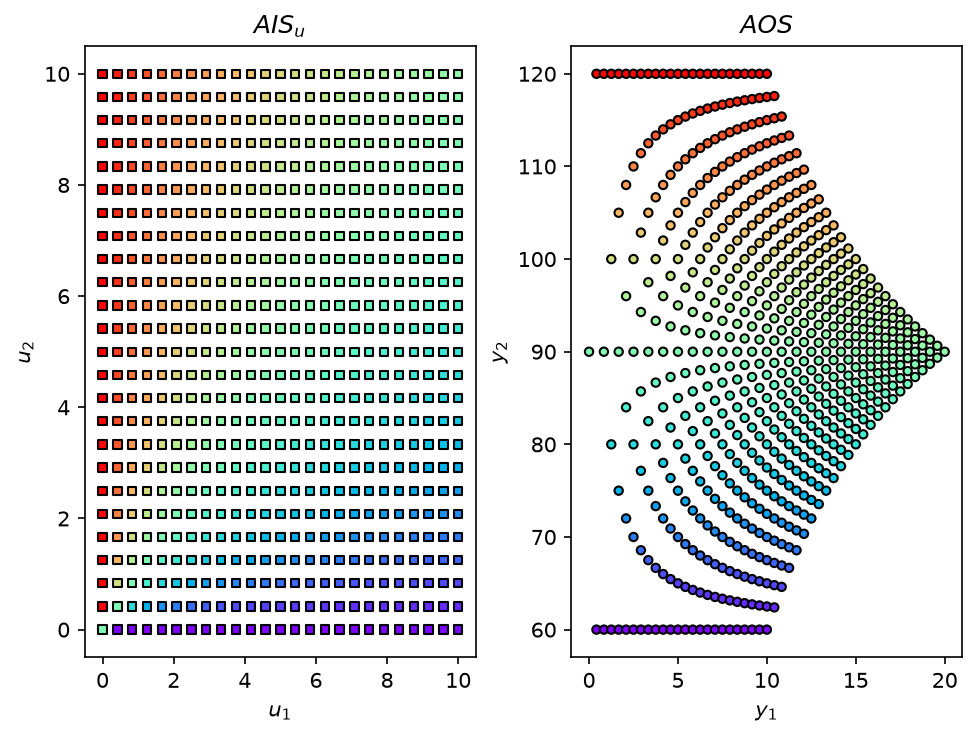
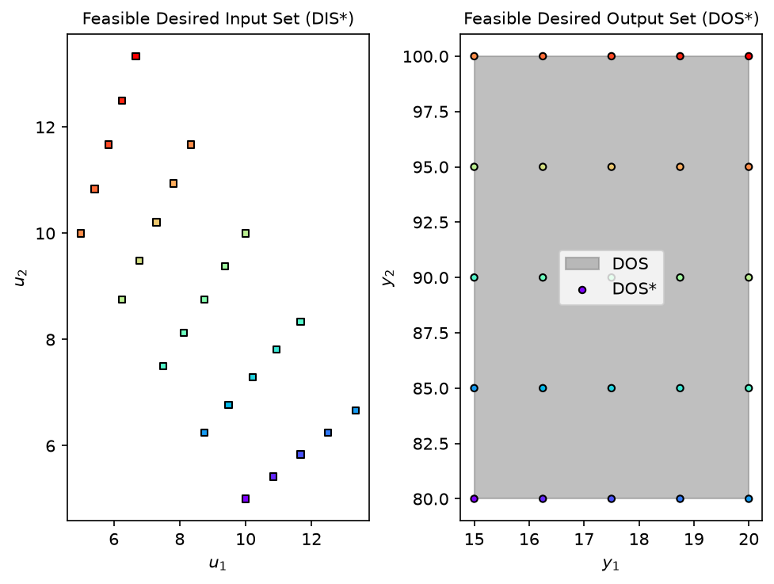
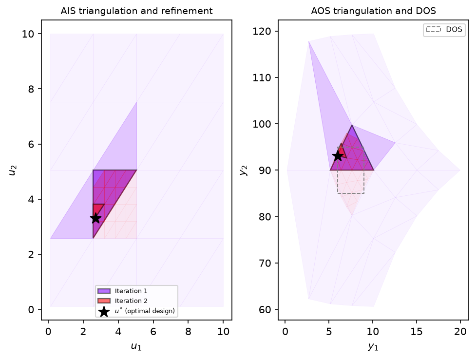
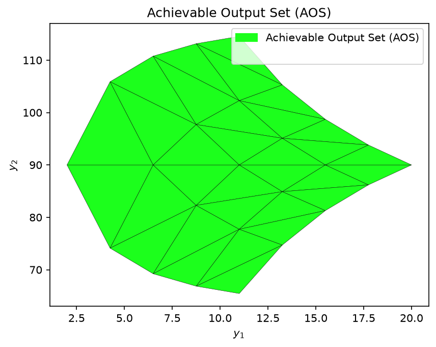
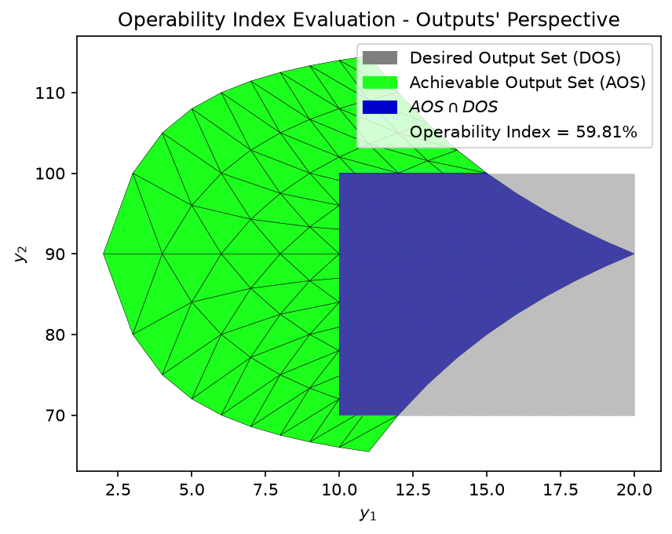
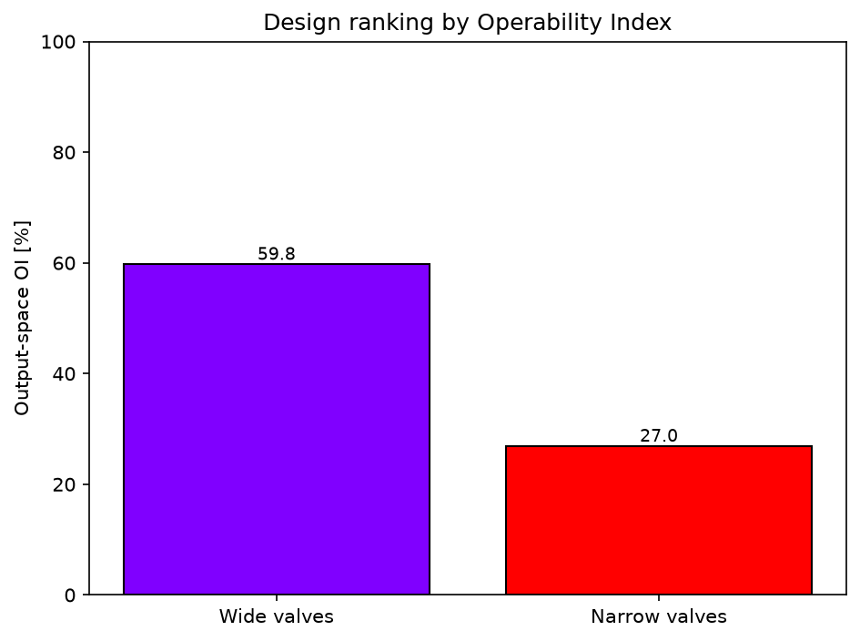
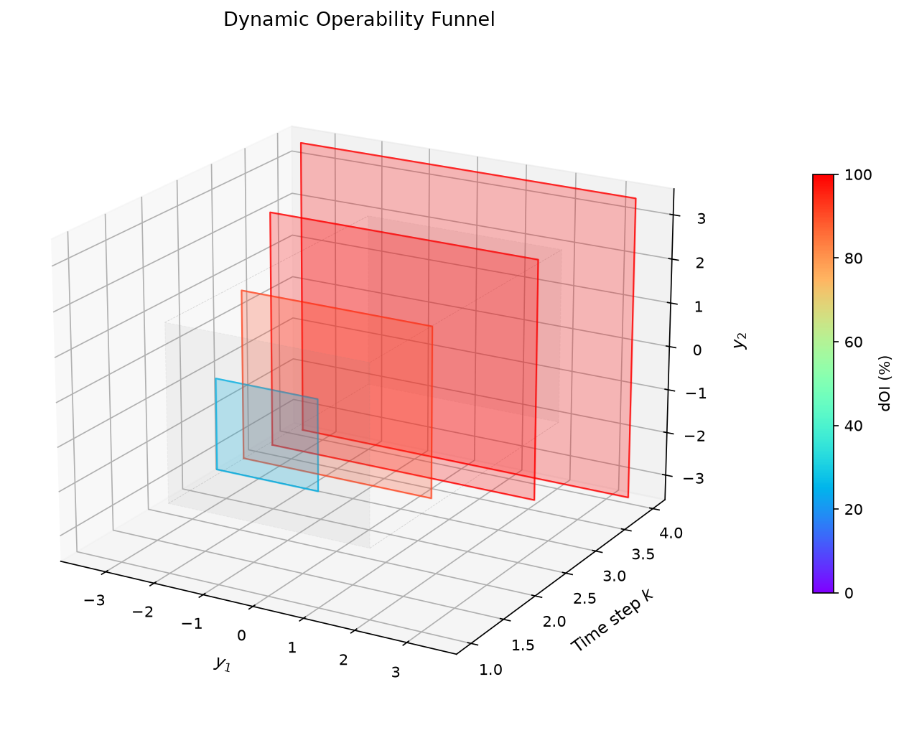
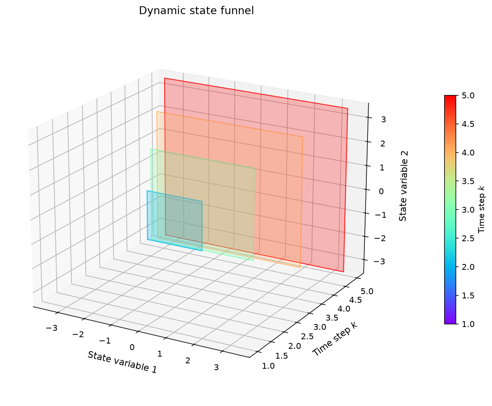
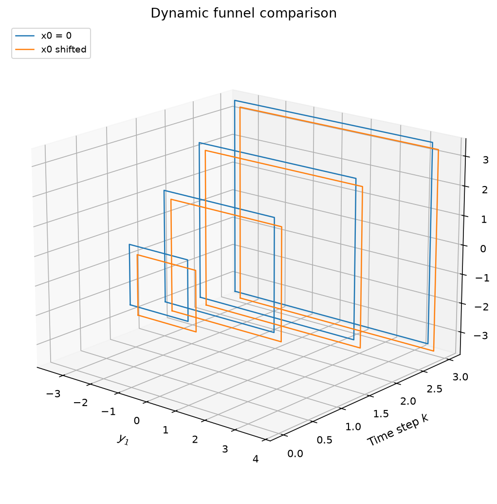
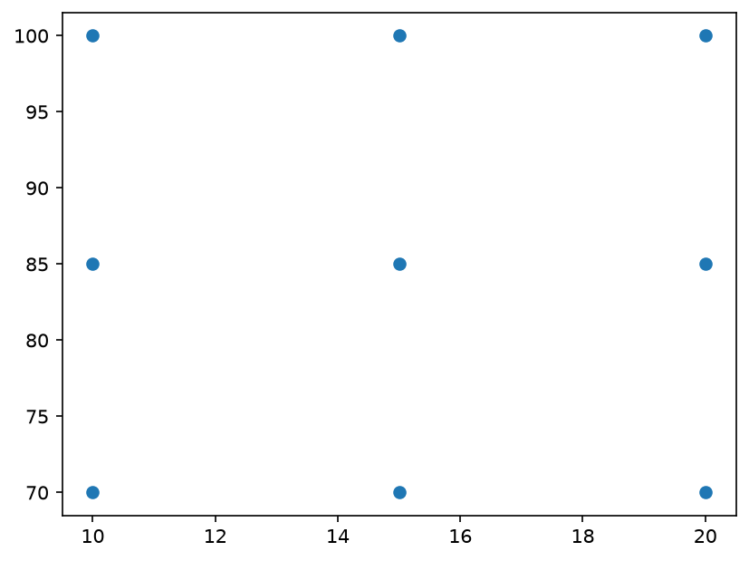

API Documentation#
The functions described below are part of opyrability and are classified based on their functionality. Each function also contains a worked example based on the famous Shower Problem[18, 21]
Conventional mapping (AIS to AOS)#
Forward mapping#
- opyrability.AIS2AOS_map(model: Callable[[...], float | ndarray], AIS_bound: ndarray, AIS_resolution: ndarray, EDS_bound: ndarray = None, EDS_resolution: ndarray = None, plot: bool = True, labels: list = None, output_dim: int = None, pyomo_solver: str = 'ipopt') ndarray[source]#
Forward mapping for Process Operability calculations (From AIS to AOS). From an Available Input Set (AIS) bounds and discretization resolution both defined by the user, this function calculates the corresponding discretized Available Output Set (AOS).
Authors: San Dinh & Victor Alves
- Parameters:
model (Callable[...,Union[float,np.ndarray]]) – Process model that calculates the relationship between inputs (AIS) and Outputs (AOS).
AIS_bound (np.ndarray) – Lower and upper bounds for the Available Input Set (AIS).
AIS_resolution (np.ndarray) – Resolution for the Available Input Set (AIS). This will be used to discretize the AIS.
EDS_bound (np.ndarray) – Lower and upper bounds for the Expected Disturbance Set (EDS). Default is ‘None’.
EDS_resolution (np.ndarray) – Resolution for the Expected Disturbance Set (EDS). This will be used to discretize the EDS.
plot (bool) – Turn on/off plot. If dimension is d<=3, plot is available and both the Achievable Output Set (AOS) and Available Input Set (AIS) are plotted. Default is True.
labels (list, Optional.) – Custom axis labels for the plots, input-side labels first and output-side labels afterwards (when an EDS is present, the disturbance labels follow the manipulated input labels). Accepts TeX math input as it uses matplotlib math rendering. Example for a 2x2 system: labels=[‘Flowrate [m3/h]’, ‘Temperature [K]’, ‘Level [m]’, ‘Concentration [mol/L]’]. Default is None, which reproduces the standard $u_{i}$/$d_{i}$/$y_{i}$ labels.
output_dim (int, Optional.) – Number of output variables y. Required when the model is a Pyomo/OMLT builder (the output dimension cannot be inferred from an algebraic model). Ignored for plain callable models. Default is None.
pyomo_solver (str, Optional.) – NLP solver used to simulate Pyomo/OMLT models in the forward mapping (‘ipopt’ or ‘pounce’). Ignored for plain callable models. Default is ‘ipopt’.
Notes
Pyomo/OMLT models: when the model is a Pyomo builder (a function model(m, u_vars, y_vars) flagged with a build_pyomo_constraints attribute, or an OMLT object), the forward mapping wraps it into a simulation proxy: inputs are fixed at each grid point and the square algebraic system is solved for the outputs. The proxy prefers the persistent appsi_ipopt interface when available, falling back to the standard executable interface. Pyomo/OMLT support contributed by Heitor F. (github @hfsf), PR #33, adapted.
- Returns:
AIS (np.ndarray) – Discretized Available Input Set (AIS).
AOS (np.ndarray) – Discretized Available Output Set (AOS). Discretized Available Output Set (AOS).
Example#
Obtaining the Achievable Output Set (AOS) for the shower problem.
Importing opyrability and Numpy:
from opyrability import AIS2AOS_map
import numpy as np
Defining the equations that describe the process:
def shower_problem(u):
y = np.zeros(2)
y[0]=u[0]+u[1]
if y[0]!=0:
y[1]=(u[0]*60+u[1]*120)/(u[0]+u[1])
else:
y[1]=(60+120)/2
return y
Defining the AIS bounds, as well as the discretization resolution:
AIS_bounds = np.array([[0, 10], [0, 10]])
resolution = [25, 25]
Obtain discretized AIS/AOS.
AIS, AOS = AIS2AOS_map(shower_problem, AIS_bounds, resolution, plot = True)

Inverse mapping (AOS/DOS to AIS/DIS)#
NLP-Based#
- opyrability.nlp_based_approach(model: Callable[[...], float | ndarray], DOS_bounds: ndarray, DOS_resolution: ndarray, u0: ndarray, lb: ndarray, ub: ndarray, constr=None, method: str = 'pounce', plot: bool = True, ad: bool = False, warmstart: bool = True, labels: str = None, pyomo_solver: str = 'ipopt', print_level: int = 5, problem: str = 'P1', PI_target: Callable[[...], float | ndarray] = None, PI_bounds: ndarray = None) ndarray | list[source]#
Inverse mapping for Process Operability calculations. From a Desired Output Set (DOS) defined by the user, this function calculates the closest Feasible Desired Ouput set (DOS*) from the AOS and its respective Feasible Desired Input Set (DIS*), which gives insight about potential changes in design and/or operations of a given process model.
Author: Victor Alves
- Parameters:
model (Callable[...,Union[float,np.ndarray]]) – Process model that calculates the relationship from inputs (AIS-DIS) to outputs (AOS-DOS).
DOS_bounds (np.ndarray) – Array containing the bounds of the Desired Output set (DOS). Each row corresponds to the lower and upper bound of each variable.
DOS_resolution (np.ndarray) – Array containing the resolution of the discretization grid for the DOS. Each element corresponds to the resolution of each variable. For a resolution defined as k, it will generate d^k points (in which d is the dimensionality of the problem).
u0 (np.ndarray) – Initial estimate for the inverse mapping at each point. Should have same dimension as model inputs.
lb (np.ndarray) – Lower bound on inputs.
ub (np.ndarray) – Upper bound on inputs.
constr (list, optional) – List of functions containing constraints to the inverse mapping. The default is None. follows scipy.optimize synthax.
method (str) –
Optimization method used. The default is ‘pounce’ (Pounce, a pure-Rust reimplementation of the Ipopt interior-point solver, installed as a core dependency). Set ‘ipopt’ to use cyipopt’s IPOPT instead (an optional dependency, typically installed via conda). Options are:
For unconstrained problems:
-‘trust-constr’
-‘Nelder-Mead’
-‘ipopt’
-‘pounce’
-‘DE’
For constrained problems:
-‘ipopt’
-‘pounce’
-‘DE’
-‘SLSQP’
plot (bool) – Turn on/off plot. If dimension is d<=3, plot is available and both the Feasible Desired Output Set (DOS*) and Feasible Desired Input Set (DIS*) are plotted. Default is True.
ad (bool) – Turn on/off use of Automatic Differentiation using JAX. If Jax is installed, high-order data (jacobians, hessians) are obtained using AD. Default is False.
warmstart (bool) – Turn on/off warm-start of NLP. If ‘on’, the sucessful solution of the current iteration is used as an estimate to the next one. Default is True.
labels (str, Optional.) – labels for axes. Accepts TeX math input as it uses matplotlib math rendering. Should be in order u1,u2,u3, y1, y2, y3, and so on: labels= [‘first u label’,’second u label’, ‘first y label’, ‘second y label’]. Default is False.
pyomo_solver (str, Optional.) – NLP solver used when the model is a Pyomo/OMLT builder (see below). Either ‘ipopt’ or ‘pounce’. Ignored for plain callable models. Default is ‘ipopt’.
print_level (int, Optional.) – Solver output verbosity for the Pyomo/OMLT path (Ipopt convention, 0 = silent to 12 = most verbose). Ignored for plain callable models. Default is 5 (Ipopt’s default).
problem (str, Optional.) –
Which operability optimization problem to solve. Options are:
-‘P1’ (default): the classic inverse mapping. For each DOS grid point, minimize the relative error sum(((y - y*)/y)**2) to obtain the DIS*/DOS* pair. This is the original behavior of this function, unchanged.
-‘P2’: process intensification. Solves P1 over the DOS grid, filters the DOS* by the level of performance given in PI_bounds (the DOS_PI subset), and selects the design among the DIS_PI points that minimizes PI_target: Omega = min PI_target subject to u in DIS*, y in DOS*. Since P2 is a postprocessing step on the P1 output, the returned (fDIS, fDOS) can be ranked by any other PI_target directly, without re-solving P1.
-‘P3’: the bilevel operability framework. The nested program
Psi = min_{u in U} [PI_target] s.t. u*_k in argmin {sum_j ((y_jk - y*_jk)/y_jk)**2 : u*_k in U_k, y_k in DOS}, c_1(u*_k) <= 0
with the inner argmin being problem P1 over the k = 1…p DOS grid points and c_1 the process constraints (constr). It is solved through its validated sequential equivalence: the outcome is the same as solving P1 and P2 in series over the full DOS grid (Carrasco dissertation, pp. 56 and 60).
Default is ‘P1’.
PI_target (Callable, Optional.) – Process intensification target Omega(u) for problems P2/P3, a function of the input vector returning the metric to minimize (e.g. reactor volume, membrane area, cost). Required for P2/P3. Default is None.
PI_bounds (np.ndarray, Optional.) – Level-of-performance box (the DOS_PI subset of the DOS), shape (n_y, 2). Only DOS* points inside this box are eligible for the intensified design selection. Default is None (the full DOS_bounds are used).
Notes
Pyomo/OMLT models (equation-oriented path): instead of a plain Python callable, the model may be a Pyomo builder function with the signature model(m, u_vars, y_vars) that adds the process constraints linking the input variables u_vars to the output variables y_vars on the Pyomo ConcreteModel m, flagged by setting an attribute on the function: model.build_pyomo_constraints = True (or is_omlt for OMLT objects). The inverse mapping is then solved algebraically with exact first and second derivatives from the Pyomo expression graph. The ‘ad’ and ‘constr’ arguments are ignored in this path (define constraints in the builder). Pyomo/OMLT support contributed by Heitor F. (github @hfsf), PR #33, adapted.
- Returns:
fDIS (np.ndarray) – Feasible Desired Input Set (DIS*). Array containing the solution for each point of the inverse-mapping.
fDOS (np.ndarray) – Feasible Desired Output Set (DOS*). Array containing the feasible output for each feasible input calculated via inverse-mapping.
message_list (list) – List containing the termination criteria for each optimization run performed for each DOS grid point.
pi_report (dict) – Returned ONLY for problem=’P2’ or ‘P3’ (the classic P1 return is unchanged). Contains the intensified design ‘u_PI’, its outputs ‘y_PI’, the metric value ‘PI_value’, the level-of-performance subsets ‘DIS_PI’/’DOS_PI’ (eqs. 5.1-5.2 of Carrasco’s dissertation), the metric evaluated over the subset ‘PI_grid’, the ‘problem’ string and a ‘success’ flag.
References
[1] J. C. Carrasco and F. V. Lima, “An optimization-based operability framework for process design and intensification of modular natural gas utilization systems,” Comput. & Chem. Eng, 2017. https://doi.org/10.1016/j.compchemeng.2016.12.010
Example#
Obtaining the Feasible Desired Input Set (DIS*) for the shower problem.
Importing opyrability and Numpy:
import numpy as np
from opyrability import nlp_based_approach
Defining lower and upper bound for the AIS/DIS inverse map:
lb = np.array([0, 0])
ub = np.array([100,100])
Defining DOS bounds and resolution to obtain the inverse map:
DOS_bound = np.array([[15, 20],
[80, 100]])
resolution = [5, 5]
Defining the equations that describe the process:
def shower_problem(u):
y = np.zeros(2)
y[0]=u[0]+u[1]
if y[0]!=0:
y[1]=(u[0]*60+u[1]*120)/(u[0]+u[1])
else:
y[1]=(60+120)/2
return y
Obtaining the DIS*, DOS* and the convergence for each inverse map run. Additionally, using IPOPT as the NLP solver, enabling plotting of the process operability sets, cold-starting the NLP and using finite differences:
u0 = u0 = np.array([0, 10]) # Initial estimate for inverse mapping.
fDIS, fDOS, message = nlp_based_approach(shower_problem,
DOS_bound,
resolution,
u0,
lb,
ub,
method='ipopt',
plot=True,
ad=False,
warmstart=False)
******************************************************************************
This program contains Ipopt, a library for large-scale nonlinear optimization.
Ipopt is released as open source code under the Eclipse Public License (EPL).
For more information visit https://github.com/coin-or/Ipopt
******************************************************************************

MILP-Based (multilayer operability framework)#
- opyrability.milp_based_approach(model: Callable[[...], float | ndarray], AIS_bound: ndarray, PI_target: Callable[[...], float | ndarray], DOS_bounds: ndarray, AIS_resolution=3, input_constr: tuple = None, tol: float = 0.001, max_iter: int = 20, solver_options: dict = None, plot: bool = True, labels: list = None) ndarray | float | list[source]#
MILP-based iterative algorithm for optimal modular design: Layer 1 of the multilayer operability framework of Gazzaneo and Lima. At each iteration, the nonlinear process model is simulated on a coarse AIS grid, the input-output data are triangulated into paired multimodel polytopes (the linearized subsystems), the pairs satisfying the DOS and the input constraints are kept, and a mixed-integer linear program selects the design point minimizing the linearized process intensification target via barycentric interpolation: binaries b_k pick exactly one polytope pair and continuous weights w express the design as a convex combination of its vertices. The AIS bounds are then refined to the winning polytope and the procedure repeats until the relative change in the objective falls below tol.
The MILP is solved with scipy.optimize.milp (the HiGHS solver bundled inside scipy, no additional installation needed; for advanced HiGHS controls the highspy package is the escalation path).
Author: Victor Alves – Carnegie Mellon University
- Parameters:
model (Callable) – Process model (forward mapping) y = M(u). Either a plain callable or a Pyomo/OMLT builder (auto-detected, simulated through the forward-mapping proxy).
AIS_bound (np.ndarray) – Bounds of the Available Input Set for design, shape (n_u, 2).
PI_target (Callable) – Process intensification target Omega(u) to minimize (e.g. reactor volume, membrane area, cost). Evaluated at the polytope vertices; the MILP minimizes its barycentric linearization.
DOS_bounds (np.ndarray) – Desired Output Set bounds (including PI and sustainable manufacturing targets), shape (n_y, 2). The framework requires a square system (n_y equal to n_u) for the simplicial multimodel representation.
AIS_resolution (int or array-like, Optional.) – Grid resolution per input dimension for the multimodel discretization. The paper uses 3 (a 3^n grid). Default is 3.
input_constr (tuple, Optional.) – Linear input constraints as (A_u, b_u) with A_u u <= b_u, e.g. the plug-flow aspect ratio L/D >= 30 written as (np.array([[-1.0, 30.0]]), np.array([0.0])). Default is None.
tol (float, Optional.) – Relative-improvement stopping tolerance between consecutive iterations. Default is 1e-3 (the paper’s 0.001).
max_iter (int, Optional.) – Maximum number of refinement iterations. Default is 20.
solver_options (dict, Optional.) – Options forwarded to scipy.optimize.milp (e.g. {‘mip_rel_gap’: 1e-3, ‘time_limit’: 60}). Default is None.
plot (bool, Optional.) – Plot the iteration history (2D systems only): the refined triangulations, the winning polytopes and the optimal design. Default is True.
labels (list, Optional.) – Axis labels, input labels first then output labels, e.g. [‘L [cm]’, ‘D [cm]’, ‘Benzene [mg/h]’, ‘Conversion [%]’]. Default is None.
- Returns:
u_opt (np.ndarray) – The optimal (intensified/modular) design point.
y_opt (np.ndarray) – The outputs of the optimal design from the barycentric interpolation (re-evaluate model(u_opt) for the nonlinear value).
PI_linearized (float) – The linearized PI target at the optimum (phi), i.e. the quantity the MILP actually minimizes (the barycentric interpolation of PI_target over the winning simplex vertices).
PI_true (float) – The true intensification metric, PI_target evaluated directly at the optimal design u_opt. Equals PI_linearized when PI_target is linear, and converges to it as the simplices shrink; their gap is the linearization error.
history (list) – One dict per iteration with keys ‘phi’, ‘u’, ‘y’, ‘PI_true’, ‘AIS_simplex’/’AOS_simplex’ (the winning input/output simplex), ‘AIS_simplices’/’AOS_simplices’ (the full multimodel triangulation of the current box), ‘AIS_simplices_kept’/’AOS_simplices_kept’ (the subset reaching the DOS), ‘AIS_bound’, ‘n_pairs’, ‘E_rel’ and ‘milp_status’.
References
- [1] V. Gazzaneo and F. V. Lima. Multilayer Operability Framework for
Process Design, Intensification, and Modularization of Nonlinear Energy Systems. Ind. Eng. Chem. Res., 58, 6069-6079, 2019. https://doi.org/10.1021/acs.iecr.8b05482
- [2] V. Gazzaneo, J. C. Carrasco, D. R. Vinson and F. V. Lima.
Process Operability Algorithms: Past, Present, and Future Developments. Ind. Eng. Chem. Res., 59, 2457-2470, 2020.
Example#
Optimal modular design of the shower problem, minimizing the total water usage subject to a desired output region and the linear input constraint \(u_1 \leq u_2\):
import numpy as np
from opyrability import milp_based_approach
# shower_problem is defined in the forward-mapping example above.
u_opt, y_opt, phi, phi_true, history = milp_based_approach(
shower_problem,
AIS_bound=np.array([[0.1, 10.0], [0.1, 10.0]]),
PI_target=lambda u: u[0] + u[1],
DOS_bounds=np.array([[6.0, 9.0], [85.0, 95.0]]),
AIS_resolution=5,
input_constr=(np.array([[1.0, -1.0]]), np.array([0.0])))

Implicit mapping#
- opyrability.implicit_map(model: Callable[[...], float | ndarray], image_init: ndarray, domain_bound: ndarray = None, domain_resolution: ndarray = None, domain_points: ndarray = None, direction: str = 'forward', validation: str = 'predictor-corrector', tol_cor: float = 0.0001, continuation: str = 'Explicit RK4', derivative: str = 'jax', jit: bool = True, step_cutting: bool = False)[source]#
Performs implicit mapping of an implicitly defined process F(u,y) = 0. F can be a vector-valued, multivariable function, which is typically the case for chemical processes studied in Process Operability. This method relies on the implicit function theorem and automatic differentiation in order to obtain the mapping of the required input/output space. The mapping “direction” can be set by changing the ‘direction’ parameter.
Authors: San Dinh & Victor Alves
- Parameters:
implicit_model (Callable[...,Union[float,np.ndarray]]) –
Process model that describes the relationship between the input and output spaces. Has to be written as a function in the following form:
F(Input Vector, Output Vector) = 0
domain_bound (np.ndarray) – Domains of the domain variables. Each row corresponds to the lower and upper bound of each variable. The domain terminology corresponds to the mathematical definition of the domain of a function: If the mapping is in the foward direction (direction = ‘forward’), then the domain corresponds to the process inputs. Otherwise, the mapping is in the inverse direction and the domain corresponds to the process outputs.
domain_resolution (np.ndarray) – Array containing the resolution of the discretization grid for the domain. Each element corresponds to the resolution of each variable. For a resolution defined as k, it will generate d^k points (in which d is the dimensionality of the domain).
direction (str, optional) – Mapping direction. this will define if a forward or inverse mapping is performed. The default is ‘forward’.
validation (str, optional) –
How the implicit mapping is obatined. The default is ‘predictor-corrector’. The available options are:
’predictor’ => Numerical integration only.
’corrector’ => Solved using a nonlinear equation solver.
’predictor-corrector’ => Numerical integration + correction using nonlinear equation solver if F(u, y) >= Tolerance.
tol_cor (float, optional) – Tolerance for solution of the implicit function F(u,y) <= tol_cor. The algorithm will keep solving the implicit mapping while F(u,y) >= tol_cor. The default is 1e-4.
continuation (str, optional) –
Numerical continuation method used in the implicit mapping. The default is ‘Explicit RK4’ .
’Explicit Euler’ - Euler’s method. Good for simple (nonstiff) problems.
’Explicit RK4’ - Fixed-step 4th order Runge-Kutta. Good for moderate, mildly stiff problems. Good balance between accuracy and complexity.
’Odeint’ - Variable step Runge-Kutta. Suitable for challenging, high-dimensional and stiff problems. This is a fully-featured IVP solver.
derivative (str, optional) – Derivative calculation method. If JAX is available, automatic differentiation can be performed. The default is ‘jax’.
jit (bool True, optional) – JAX’s Just-in-time compilation (JIT) of implicit function and its respective multidimensional derivatives (Jacobians). JIT allows faster computation of the implicit map. The default is True.
step_cutting (bool, False, optional) – Cutting step strategy to subdivide the domain/image in case of stiffness. The default is ‘False’.
- Returns:
domain_set (np.ndarray) – Set of values that corresponds to the domain of the implicit function.
image_set (np.ndarray) – Set of values that corresponds to the calculated image of the implicit function.,
domain_polyhedra (list) – Set of coordinates for polytopic construction of the domain. Can be used to create polytopes for multimodel representation and/or OI evaluation (see multimodel_rep and oi_calc modules)
image_polyhedra (list) – Set of coordinates for polytopic construction of the calculated image of the implicit function. Similarly to ‘domain_polyhedra’, this list can be used to construct polytopes for multimodel representation and OI evaluation.
References
V. Alves, J. R. Kitchin, and F. V. Lima. “An inverse mapping approach for process systems engineering using automatic differentiation and the implicit function theorem”. AIChE Journal, 2023. https://doi.org/10.1002/aic.18119
Example#
Trace the forward map (AIS to AOS) and the inverse map (DOS to DIS) of a model written implicitly as \(F(u, y) = 0\), here a simple linear example \(y = A u\):
import numpy as np
import jax.numpy as jnp
from opyrability import implicit_map
A = np.array([[2.0, 1.0], [1.0, 3.0]])
def F(u, y): # F(u, y) = 0 <=> y = A u
return jnp.array([y[0] - (A[0, 0] * u[0] + A[0, 1] * u[1]),
y[1] - (A[1, 0] * u[0] + A[1, 1] * u[1])])
# Forward: map the Available Input Set to the Achievable Output Set.
AIS_imp = np.array([[0.0, 1.0], [0.0, 1.0]])
fwd_in, fwd_out, _, _ = implicit_map(F,
image_init=A @ AIS_imp[:, 0],
domain_bound=AIS_imp,
domain_resolution=[5, 5],
direction='forward')
# Inverse: map a Desired Output Set back to the Desired Input Set.
DOS_imp = np.array([[0.0, 2.0], [0.0, 2.0]])
inv_in, inv_out, _, _ = implicit_map(F,
image_init=np.linalg.solve(A, DOS_imp[:, 0]),
domain_bound=DOS_imp,
domain_resolution=[5, 5],
direction='inverse')
Forward Mapping Selected.
The given domain is recognized as an Available Input Set (AIS).
The result of this mapping is an Achievable Output Set(AOS)
Selected RK4
Inverse Mapping Selected.
The given domain is recognized as Desired Output Set (DOS).
The result of this mapping is an Desired Input Set(DIS)
Selected RK4
print('forward AOS grid:', np.asarray(fwd_out).shape)
print('inverse DIS grid:', np.asarray(inv_out).shape)
forward AOS grid: (5, 5, 2)
inverse DIS grid: (5, 5, 2)
Multimodel representation#
- opyrability.multimodel_rep(model: Callable[[...], float | ndarray], bounds: ndarray, resolution: ndarray, polytopic_trace: str = 'simplices', perspective: str = 'outputs', plot: bool = True, EDS_bound=None, EDS_resolution=None, labels: str = None)[source]#
Obtain a multimodel representation based on polytopes of Process Operability sets. This procedure is essential for evaluating the Operability Index (OI).
Author: Victor Alves
- Parameters:
model (Callable[...,Union[float,np.ndarray]]) – Process model that calculates the relationship between inputs (AIS-DIS) and Outputs (AOS-DOS).
bounds (np.ndarray) – Bounds on the Available Input Set (AIS), or Desired Output Set (DOS) if an inverse mapping is chosen. Each row corresponds to the lower and upper bound of each AIS or DOS variable.
resolution (np.ndarray) – Array containing the resolution of the discretization grid for the AIS or DOS. Each element corresponds to the resolution of each variable. For a resolution defined as k, it will generate d^k points (in which d is the dimensionality of the AIS or DOS).
polytopic_trace (str, Optional.) – Determines if the polytopes will be constructed using simplices or polyhedrons. Default is ‘simplices’. Additional option is ‘polyhedra’.
perspective (str, Optional.) – Defines if the calculation is to be done from the inputs/outputs perspective. Also affects labels in plots. Default is ‘outputs’.
plot (str, Optional.) – Defines if the plot of operability sets is desired (If the dimension is <= 3). Default is True.
EDS_bound (np.ndarray) – Lower and upper bounds for the Expected Disturbance Set (EDS). Default is ‘None’.
EDS_resolution (np.ndarray) – Resolution for the Expected Disturbance Set (EDS). This will be used to discretize the EDS, similar to the AIS_resolution
labels (str, Optional.) – labels for axes. Accepts TeX math input as it uses matplotlib math rendering. Should be in order y1, y2, y3, and so on: labels= [‘first label’,’second label’]. Default is None.
- Returns:
mapped_region – List with first argument being a convex polytope or collection of convex polytopes (named as Region) that describes the AOS. Can be used to calculate the Operability Index using
OI_eval. Second argument is the coordinates of the AOS as a numpy array.- Return type:
list
References
[1] D. R., Vinson and C. Georgakis. New Measure of Process Output Controllability. J. Process Control, 2000. https://doi.org/10.1016/S0959-1524(99)00045-1
[2] C. Georgakis, D. Uztürk, S. Subramanian, and D. R. Vinson. On the Operability of Continuous Processes. Control Eng. Pract., 2003. https://doi.org/10.1016/S0967-0661(02)00217-4
[3] V.Gazzaneo, J. C. Carrasco, D. R. Vinson, and F. V. Lima. Process Operability Algorithms: Past, Present, and Future Developments. Ind. & Eng. Chem. Res. 59 (6), 2457-2470, 2020. https://doi.org/10.1021/acs.iecr.9b05181
Example#
Obtaining the Achievable Output Set (AOS) for the shower problem.
Importing opyrability and Numpy:
from opyrability import multimodel_rep
import numpy as np
Defining the equations that describe the process:
def shower_problem(u):
y = np.zeros(2)
y[0]=u[0]+u[1]
if y[0]!=0:
y[1]=(u[0]*60+u[1]*120)/(u[0]+u[1])
else:
y[1]=(60+120)/2
return y
Defining the AIS bounds and the discretization resolution:
AIS_bounds = np.array([[1, 10], [1, 10]])
AIS_resolution = [5, 5]
Obtaining multimodel representation of paired polytopes for the AOS:
AOS_region = multimodel_rep(shower_problem, AIS_bounds, AIS_resolution)

OI evaluation#
- opyrability.OI_eval(AS: Region, DS: ndarray, perspective='outputs', hypervol_calc: str = 'robust', plot: bool = True, labels: str = None)[source]#
Operability Index (OI) calculation. From a Desired Output Set (DOS) defined by the user, this function calculates the intersection between achievable (AOS) and desired output operation (DOS). Similarly, the OI can be also calculated from the inputs’ perspective, as an intersection between desired input (DIS) and available input (AIS). This function is able to evaluate the OI in any dimension, ranging from 1-d (length) up to higher dimensions (Hypervolumes, > 3-d), aided by the Polytope package.
Author: Victor Alves
- Parameters:
AS (pc.Region) – Available input set (AIS) or Achievable output set (AOS) represented as a series of paired (and convex) polytopes. This region is easily obtained using the multimodel_rep function.
DS (np.ndarray) – Array containing the desired operation, either in the inputs (DIS) or outputs perspective (DOS).
perspective (str, Optional.) – String that determines in which perspective the OI will be evaluated: inputs or outputs. default is ‘outputs’.
hypervol_calc (str, Optional.) – Determines how the approach when evaluating hypervolumes. Default is ‘robust’, an implementation that switches from qhull’s hypervolume evaluation or polytope’s evaluation depending on the dimensionality of the problem. Additional option is ‘polytope’, Polytope’s package own implementation of hypervolumes evaluation being used in problems of any dimension.
plot (bool, Optional.) – Defines if the plot of operability sets is desired. Default is True.
labels (str, Optional.) – labels for axes. Accepts TeX math input as it uses matplotlib math rendering. Should be in order y1, y2, y3, and so on: labels= [‘first label’,’second label’]. Default is None.
- Returns:
OI – Operability Index value. Ranges from 0 to 100%. A fully operable process has OI = 100% and if not fully operable, OI < 100%.
- Return type:
float
References
[1] D. R., Vinson and C. Georgakis. New Measure of Process Output Controllability. J. Process Control, 2000. https://doi.org/10.1016/S0959-1524(99)00045-1
[2] C. Georgakis, D. Uztürk, S. Subramanian, and D. R. Vinson. On the Operability of Continuous Processes. Control Eng. Pract., 2003. https://doi.org/10.1016/S0967-0661(02)00217-4
[3] V.Gazzaneo, J. C. Carrasco, D. R. Vinson, and F. V. Lima. Process Operability Algorithms: Past, Present, and Future Developments. Ind. & Eng. Chem. Res. 59 (6), 2457-2470, 2020. https://doi.org/10.1021/acs.iecr.9b05181
Example#
Evaluating the OI for the shower problem for a given DOS.
Importing opyrability and Numpy:
from opyrability import multimodel_rep, OI_eval
import numpy as np
Defining the equations that describe the process:
def shower_problem(u):
y = np.zeros(2)
y[0]=u[0]+u[1]
if y[0]!=0:
y[1]=(u[0]*60+u[1]*120)/(u[0]+u[1])
else:
y[1]=(60+120)/2
return y
Defining the AIS bounds and the discretization resolution:
AIS_bounds = np.array([[1, 10], [1, 10]])
AIS_resolution = [10, 10]
Obtaining multimodel representation of paired polytopes for the AOS:
AOS_region = multimodel_rep(shower_problem, AIS_bounds, AIS_resolution,
plot=False)
plot=False selected. The operability set is still returned as a polytopic region of general dimension.
Defining a DOS region between \(y_1 =[10-20], y_2=[70-100]\)
DOS_bounds = np.array([[10, 20],
[70, 100]])
Evaluating the OI and seeing the intersection between the operability sets:
OI = OI_eval(AOS_region, DOS_bounds)

Ranking designs by the OI#
rank_designs scores several process models by their Operability Index against
a shared DOS and returns them ranked from most to least operable, from either
the output perspective (\(\mu(AOS \cap DOS)/\mu(DOS)\)) or the input perspective,
which inverse-maps the DOS to the feasible desired input set DIS*
(\(\mu(DIS^* \cap AIS)/\mu(AIS)\)).
- opyrability.rank_designs(models, AIS_bound, DOS_bound, resolution, perspective='outputs', polytopic_trace='simplices', u0=None, lb=None, ub=None, constr=None, method='pounce', ad=False, hypervol_calc='robust', plot=True)[source]#
Rank two or more steady-state process designs by their Operability Index.
Each design (a process model) is scored by its Operability Index (OI) against the same Desired Output Set (DOS), and the designs are returned sorted from most to least operable. The comparison can be made from two perspectives:
'outputs'(default): each model is forward-mapped from its Available Input Set (AIS) to its Achievable Output Set (AOS) withmultimodel_rep, and the OI is the output-space indexmu(AOS ∩ DOS) / mu(DOS).'inputs': the DOS is inverse-mapped to the feasible desired input set (DIS*) withnlp_based_approach, and the OI is the input-space indexmu(DIS* ∩ AIS) / mu(AIS), that is, the share of the available input envelope that achieves the desired outputs.
Both indices are computed with the existing
OI_evalroutine, so the ranking inherits its geometry. Steady-state models only.Author: Victor Alves – Carnegie Mellon University
- Parameters:
models (dict or list of Callable) – The designs to rank. A dict
{label: model}names each design; a plain list is accepted and auto-labeled'Design 1','Design 2', and so on. Every model maps an input vectoruto an output vectorywhose dimension matchesDOS_bound.AIS_bound (np.ndarray or dict) – Available Input Set bounds, shape
(n_u, 2). A single array is shared by all designs; a dict{label: bounds}gives each design its own AIS, so models with different input spaces can be compared against the sameDOS_bound.DOS_bound (np.ndarray) – Desired Output Set bounds, shape
(n_y, 2), shared by all designs.resolution (int, array-like or dict) – Discretization resolution passed to the mapping routine. A single value is shared by all designs; a dict
{label: resolution}sets it per design.perspective ({'outputs', 'inputs'}, Optional.) – Space in which the OI is evaluated. Default is
'outputs'.polytopic_trace ({'simplices', 'polyhedra'}, Optional.) – Polytopic tracing passed to
multimodel_repfor the output perspective. Default is'simplices'.u0 (np.ndarray, Optional.) – Initial estimate for the inverse mapping (input perspective). Default is the midpoint of each design’s AIS.
lb (np.ndarray, Optional.) – Lower bounds for the inverse mapping (input perspective). Default is the lower column of each design’s AIS, so DIS* lies inside the AIS.
ub (np.ndarray, Optional.) – Upper bounds for the inverse mapping (input perspective). Default is the upper column of each design’s AIS.
constr (dict, Optional.) – Nonlinear constraint forwarded to
nlp_based_approach(input perspective). Default is None.method (str, Optional.) – NLP solver for the inverse mapping (input perspective). Default is
'pounce'.ad (bool, Optional.) – Whether to use automatic differentiation in the inverse mapping (input perspective). Default is False.
hypervol_calc ({'robust', 'polytope'}, Optional.) – Hypervolume method forwarded to
OI_eval. Default is'robust'.plot (bool, Optional.) – Whether to draw a ranked bar chart of the OI of each design. Default is True.
- Returns:
ranking – One entry per design, sorted by OI from highest to lowest (the list order is the ranking). Each entry has keys
'label'(the design name),'OI'(the Operability Index in percent) and'region'(thepc.Regionscored: the AOS for the output perspective, the DIS* for the input perspective).- Return type:
list of dict
Notes
For the input perspective, the feasible desired input set DIS* is taken as the convex hull of the inverse-mapping solution points (
pc.qhullover thenlp_based_approachresult), so a strongly non-convex DIS* is over-approximated by its hull. Becausenlp_based_approachbounds the inverse map by the AIS, DIS* lies inside the AIS and the input-space index reduces tomu(DIS*) / mu(AIS).References
- [1] D. R. Vinson and C. Georgakis. New Measure of Process Output
Controllability. J. Process Control, 2000. https://doi.org/10.1016/S0959-1524(99)00045-1
Example#
Ranking two design envelopes of the shower problem by their output-space OI,
reusing shower_problem and DOS_bounds defined above:
from opyrability import rank_designs
ranking = rank_designs(
{'Wide valves': shower_problem, 'Narrow valves': shower_problem},
AIS_bound={'Wide valves': np.array([[1, 10], [1, 10]]),
'Narrow valves': np.array([[3, 8], [3, 8]])},
DOS_bound=DOS_bounds,
resolution=[10, 10],
perspective='outputs',
plot=True)
plot=False selected. The operability set is still returned as a polytopic region of general dimension.
plot=False selected. The operability set is still returned as a polytopic region of general dimension.
Design ranking by output-space Operability Index:
1. Wide valves OI = 59.81 %
2. Narrow valves OI = 26.96 %

Dynamic operability#
Dynamic operability extends the steady-state sets to systems that evolve in time [10, 11]. Starting from an initial state, it builds the achievable-output funnel over a horizon of \(k\) time steps and evaluates the Dynamic Operability Index (dOI) against the Desired Output Set (DOS) at each step.
The recommended high-level entry point is dynamic_operability, which
auto-selects the propagation method (linear state-space projection for matrix
models, nonlinear projection for low-dimensional states, or n-step simulation
otherwise), evaluates the dOI, and plots the dOI-colored funnel in a single
call.
- opyrability.dynamic_operability(model, x0, AIS_bound, DOS=None, k_max=10, AIS_resolution=3, method='auto', y0=None, EDS_bound=None, monte_carlo=0, plot=True, labels=None, title=None, orientation='landscape', engine='matplotlib', seed=None)[source]#
One-call dynamic operability analysis – the recommended high-level entry point.
Builds the achievable-output funnel over k_max time steps, evaluates the Dynamic Operability Index (dOI) against the Desired Output Set, and plots the funnel with each time slice colored by its dOI – replacing the manual dynamic_operability_mapping/nstep -> dOI_eval -> plot_dynamic_funnel sequence with a single call. The propagation method is selected automatically so the caller never has to choose:
– linear state-space projection when
modelis a set of matrices, – nonlinear state-space projection for low-dimensional states, – n-step simulation for high-dimensional states (e.g. spatiallydiscretized PDE/reactor models) where the state polytope cannot be enumerated.
Author: Victor Alves – Carnegie Mellon University
- Parameters:
model (Callable or dict) – Either a step function step(x, u) -> (x_next, y) (or step(x, u, d) for the projection path with disturbances), or a dict of linear system matrices {‘A’:.., ‘B’:.., ‘C’:.., ‘B_d’:.. (optional)}. The dict also accepts ‘u_ref’, ‘y_ref’, and ‘d_ref’ nominal values so that deviation-form identified models can be analyzed with AIS, DOS, and EDS bounds given in absolute units. For high-dimensional-state models bake any disturbance into a two-argument closure step(x, u).
x0 (np.ndarray) – Initial state vector.
AIS_bound (np.ndarray) – Available Input Set bounds, shape (n_u, 2).
DOS (np.ndarray, Optional.) – Desired Output Set bounds, shape (n_y, 2). When given, the dOI is computed and the funnel is colored by it. Default None.
k_max (int, Optional.) – Number of discrete time steps. Default 10.
AIS_resolution (int or array-like, Optional.) – AIS grid resolution. Default 3.
method ({'auto', 'projection', 'nstep'}, Optional.) – Propagation method. ‘auto’ (default) picks projection for matrices or low-dimensional states (<= 8) and n-step otherwise.
y0 (np.ndarray, Optional.) – Output at x0; prepended as the k=0 funnel slice for the n-step method. Default None.
EDS_bound (np.ndarray, Optional.) – Expected Disturbance Set bounds for the projection path with an arity-3 step or a B_d matrix. Default None.
monte_carlo (int, Optional.) – If > 0, overlay this many Monte Carlo input-sequence trajectories on the funnel. Default 0.
plot (bool, Optional.) – Whether to draw the dOI-colored funnel. Default True.
labels (list, Optional.) – Output-space axis labels. Default None.
title (str, Optional.) – Plot title. Default None.
orientation ({'landscape', 'vertical'}, Optional.) – Funnel orientation, as in plot_dynamic_funnel. ‘landscape’ (default) places time on a horizontal axis with the second output vertical, matching the Dinh & Lima figures.
engine ({'matplotlib', 'plotly'}, Optional.) – Plotting engine. ‘plotly’ produces an interactive figure (pan/rotate/zoom) that stays interactive in Jupyter and in static HTML exports; ‘matplotlib’ (default) produces a static figure.
seed (int, Optional.) – Seed for the Monte Carlo trajectories. Default None.
- Returns:
results – The funnel results dict (see dynamic_operability_mapping / dynamic_operability_nstep) augmented with ‘dOI’ (when DOS is given), ‘method’ (the method used), and ‘fig’/’ax’ (when plotted).
- Return type:
dict
References
- [1] S. Dinh and F. V. Lima. Dynamic operability analysis for process
design and control of modular natural gas utilization systems. Ind. Eng. Chem. Res., 2023. https://doi.org/10.1021/acs.iecr.2c03543
Example#
A stable two-state linear time-invariant system, supplied as a matrices dict \(\{A, B, C\}\) (so the linear state-space projection is selected automatically): build the funnel over four steps and evaluate the dOI against a desired output set.
import numpy as np
from opyrability import dynamic_operability
# Linear time-invariant model: x(k+1) = A x + B u, y = C x.
model = {'A': 0.9 * np.eye(2), 'B': np.eye(2), 'C': np.eye(2)}
AIS = np.array([[-1.0, 1.0], [-1.0, 1.0]]) # Achievable Input Set.
DOS = np.array([[-2.0, 2.0], [-2.0, 2.0]]) # Desired Output Set.
result = dynamic_operability(model, x0=np.zeros(2), AIS_bound=AIS,
DOS=DOS, k_max=4)
print('method :', result['method'])
print('dOI/step :', np.round(result['dOI'], 3))
method : state-space projection (linear)
dOI/step : [ 25. 90.25 100. 100. ]
Low-level mapping#
The two low-level mappers are called internally by dynamic_operability but are
also exposed directly: dynamic_operability_mapping propagates the state-space
polytope (and uses the exact linear fast path when A, B, C are given), and
dynamic_operability_nstep builds the funnel in output space by simulation for
high-dimensional states. The examples below reuse the AIS and DOS defined in
the dynamic_operability example above.
- opyrability.dynamic_operability_mapping(step_model=None, x0=None, AIS_bound=None, AIS_resolution=5, k_max=10, EDS_bound=None, EDS_resolution=None, A=None, B=None, C=None, B_d=None, u_ref=None, y_ref=None, d_ref=None, convergence_tol=0.0001, plot=True, labels=None)[source]#
Obtain the multimodel representation of the output-space Achievable Output Set (AOS) for a dynamic process as it evolves over k time steps. Propagates the AOS forward using state-space projection from an initial state x0, mirroring multimodel_rep in the steady-state case. When the system has disturbances, a worst-case propagation is used: the AOS at each step is the intersection of the reachable sets under every vertex of the Expected Disturbance Set (EDS).
- Two propagation modes are supported:
- – Nonlinear mode (default): evaluates the user’s step_model over
every vertex of the current state polytope and every AIS grid point, taking the convex hull to obtain the next AOS. Works for arbitrary nonlinear dynamics.
- – Linear mode (opt-in): if A, B, C are supplied, uses polytope
affine transforms and Minkowski sums (Dinh & Lima, Comp. Chem. Eng., 2026).
Author: Victor Alves
- Parameters:
step_model (Callable, Optional.) – State transition of the form step_model(x, u) or step_model(x, u, d), returning the tuple (x_next, y). Arity is auto-detected via inspect.signature. Can be None ONLY when A, B, C matrices are supplied (linear fast path); in that case an internal callable is constructed for downstream simulation and MC sampling.
x0 (np.ndarray) – Initial state vector, shape (n_x,). The state-space AOS at k=0 collapses to this single point.
AIS_bound (np.ndarray) – Bounds on the Available Input Set (AIS), shape (n_u, 2). Each row corresponds to the lower and upper bound of each input dimension.
AIS_resolution (int or array-like, Optional.) – Discretization grid resolution on the AIS. A scalar applies the same resolution in every dimension; an array specifies the resolution per dimension. Resolution of 2 samples only the AIS corners; higher values capture nonlinear AOS-boundary curvature. Default is 5.
k_max (int) – Maximum number of discrete time steps to propagate the AOS forward.
EDS_bound (np.ndarray, Optional.) – Bounds on the Expected Disturbance Set (EDS), shape (n_d, 2). Required when step_model has arity 3 (or B_d is supplied in the linear fast path). Default is None.
EDS_resolution (int or array-like, Optional.) – Resolution of the disturbance grid. Only the EDS corners are required for the worst-case intersection semantics, but denser grids are accepted. Default is None (corners only).
A (np.ndarray, Optional.) – Linear state transition matrix, shape (n_x, n_x). Enables the linear fast path when A, B, and C are all given. Default is None.
B (np.ndarray, Optional.) – Linear input matrix, shape (n_x, n_u). Default is None.
C (np.ndarray, Optional.) – Linear output matrix, shape (n_y, n_x). Default is None.
B_d (np.ndarray, Optional.) – Linear disturbance-input matrix, shape (n_x, n_d). Required for the linear fast path when disturbances are present. Default is None.
u_ref (np.ndarray, Optional.) – Nominal (reference) input values, shape (n_u,). Linear path only. Identified LTI models are usually expressed in deviation variables; supplying u_ref lets the AIS_bound be given in absolute units, with the deviation u - u_ref fed to the model. Default is None (AIS_bound already in deviation form).
y_ref (np.ndarray, Optional.) – Nominal (reference) output values, shape (n_y,). Linear path only. When supplied, the output equation becomes y = C x + y_ref so the AOS (and any DOS used downstream) are in absolute units. Default is None (outputs in deviation form).
d_ref (np.ndarray, Optional.) – Nominal (reference) disturbance values, shape (n_d,). Linear path only; lets EDS_bound be given in absolute units. Default is None.
convergence_tol (float, Optional.) – Relative change threshold on the AOS volume for early stopping: the loop exits when |vol(k) - vol(k-1)| / vol(k-1) falls below this tolerance, i.e., the dynamic funnel has reached steady shape. Default is 1e-4.
plot (bool, Optional.) – Whether to generate the standard AOS evolution and volume plots (only for 2D or 3D output spaces), mirroring multimodel_rep’s plot-by-default behavior. Default is True.
labels (list, Optional.) – Axis labels for the output-space AOS plot. Accepts TeX math input as it uses matplotlib math rendering. Should be in order y1, y2, and so on: labels=[‘first label’,’second label’]. Default is None.
- Returns:
results – Dictionary containing the following entries:
- ’AOS_regions’list of pc.Region
Output-space AOS at each time step k = 1..K. Each Region contains one polytope and is directly compatible with OI_eval (used internally by dOI_eval).
- ’AOS_x’list of pc.Polytope
State-space AOS at each time step, starting from k = 0.
- ’volumes’np.ndarray
AOS_y Lebesgue volume per step, used for the convergence check and the standard diagnostic plot.
- ’k_converged’int or None
Step at which the volume-change tolerance was first met; None if the loop ran to k_max.
Additional private keys (‘_step_model’, ‘_arity’, ‘_x0’, ‘_AIS_bound’, ‘_EDS_bound’, ‘_matrices’) are included so that downstream routines (dOI_eval, simulate_mc_trajectories, plot_dynamic_funnel) can reuse the system definition without requiring the user to re-specify it.
- Return type:
dict
References
- [1] S. Dinh and F. V. Lima. Dynamic operability analysis for process
design and control of modular natural gas utilization systems. Ind. Eng. Chem. Res., 2023. https://doi.org/10.1021/acs.iecr.2c03543
- [2] S. Dinh. Nonlinear Dynamic Analysis and Control of Chemical
Processes Using Dynamic Operability Framework. PhD Dissertation, West Virginia University, 2023.
- [3] S. Dinh and F. V. Lima. Linear dynamic operability analysis with
state-space projection for the online construction of achievable output funnels. Comput. Chem. Eng., 205:109428, 2026. https://doi.org/10.1016/j.compchemeng.2025.109428
Example#
Build the funnel directly from the LTI matrices:
from opyrability import dynamic_operability_mapping
A = 0.9 * np.eye(2)
mapping = dynamic_operability_mapping(x0=np.zeros(2),
AIS_bound=AIS,
AIS_resolution=3,
k_max=4,
A=A, B=np.eye(2), C=np.eye(2),
plot=False)
print('funnel slices:', len(mapping['AOS_regions']))
funnel slices: 4
- opyrability.dynamic_operability_nstep(step_model, x0, AIS_bound, k_max, AIS_resolution=3, y0=None, max_vertices=80, convergence_tol=0.001, plot=False, labels=None)[source]#
Build the dynamic Achievable Output Set (AOS) funnel by direct n-step simulation of a nonlinear step model, reproducing the construction used in Dinh & Lima (IECR, 2023, Figures 8-9).
Unlike dynamic_operability_mapping, which propagates a state-space polytope and is therefore limited to low-dimensional states, this routine works entirely in the output space and is suited to high-dimensional-state models (e.g. spatially discretized PDE/reactor models with hundreds of states). From a fixed initial state x0 it forward-simulates input sequences and takes the convex hull of the reachable outputs at each step k. The reachable set is propagated by vertex tracking: every retained boundary state is branched over the AIS grid, the resulting outputs are hulled to form AOS(k), and only the states whose outputs land on that hull are retained for the next step. This keeps the vertex count bounded while tracing the AOS boundary, avoiding the scenario-tree blow-up of full input-sequence enumeration.
Disturbances are handled by the caller: wrap the disturbance into a fixed-d, two-argument closure step(x, u) and call this routine once per disturbance value, then intersect the resulting AOS regions step-by-step (pc.intersect) to obtain the disturbance-robust funnel (Figure 9).
The returned dictionary follows the same contract as dynamic_operability_mapping, so dOI_eval, simulate_mc_trajectories, and plot_dynamic_funnel can be chained directly afterward.
Author: Victor Alves – Carnegie Mellon University
- Parameters:
step_model (Callable) – Two-argument state transition step_model(x, u) returning the tuple (x_next, y). x is the full (possibly high-dimensional) state and y is the output vector. The step integrates the dynamics over one discrete time step internally.
x0 (np.ndarray) – Initial state vector. The funnel starts from this single point.
AIS_bound (np.ndarray) – Bounds on the Available Input Set, shape (n_u, 2).
k_max (int) – Maximum number of discrete time steps to propagate forward.
AIS_resolution (int or array-like, Optional.) – Grid resolution on the AIS used to branch each retained state. A scalar applies the same resolution to every input dimension. Default is 3 (matching the MATLAB reference implementation).
y0 (np.ndarray, Optional.) – Output at the initial state x0. When provided, a degenerate AOS point at y0 is prepended as the k=0 funnel slice so the funnel starts from the steady state. Default is None.
max_vertices (int, Optional.) – Cap on the number of boundary states retained between steps. When the hull has more vertices, they are evenly subsampled. Default 80.
convergence_tol (float, Optional.) – Relative change in AOS area below which the funnel is considered time-invariant and propagation stops early. Default is 1e-3.
plot (bool, Optional.) – Whether to draw the AOS evolution and area curves. Default False.
labels (list, Optional.) – Output-space axis labels. Default None.
- Returns:
results – Same contract as dynamic_operability_mapping: ‘AOS_regions’ (list of pc.Region per step), ‘volumes’, ‘k_converged’, plus the private keys ‘_step_model’, ‘_arity’, ‘_x0’, ‘_AIS_bound’, ‘_EDS_bound’, ‘_matrices’ used by the downstream dynamic-operability functions.
- Return type:
dict
References
- [1] S. Dinh and F. V. Lima. Dynamic operability analysis for process
design and control of modular natural gas utilization systems. Ind. Eng. Chem. Res., 2023. https://doi.org/10.1021/acs.iecr.2c03543
Example#
Output-space funnel by simulation, for an arbitrary step model step(x, u):
from opyrability import dynamic_operability_nstep
def integrator_step(x, u):
x_next = np.asarray(x, float) + 0.1 * np.asarray(u, float)
return x_next, x_next
ns = dynamic_operability_nstep(integrator_step,
np.zeros(2),
AIS,
k_max=4,
AIS_resolution=3,
plot=False)
print('n-step slices:', len(ns['AOS_regions']))
n-step slices: 4
- opyrability.dynamic_operability_scenarios(step_factory, x0_factory, AIS_bound, scenarios, DOS=None, k_max=10, AIS_resolution=3, method='auto', y0_factory=None, plot=True, labels=None, colors=None, title=None, orientation='landscape', engine='matplotlib')[source]#
Dynamic operability across several disturbance scenarios (or input sequences), together with their disturbance-robust intersection.
For each scenario the achievable-output funnel is built with dynamic_operability; the scenarios are then intersected step by step to give the robust funnel – the outputs achievable regardless of which scenario is realized (Dinh & Lima 2023, Figure 9). When the output space is two-dimensional the result is plotted: each scenario’s funnel outline in its own color with the robust intersection filled and stacked along the time axis. For higher output dimensions the plot is skipped and the numerical results are returned.
Author: Victor Alves – Carnegie Mellon University
- Parameters:
step_factory (Callable) – Maps a scenario value d to a two-argument step closure step(x, u) -> (x_next, y) with that disturbance baked in.
x0_factory (Callable) – Maps a scenario value d to the initial state x0 for that scenario (e.g. the steady state at that disturbance).
AIS_bound (np.ndarray) – Available Input Set bounds, shape (n_u, 2).
scenarios (dict or list) – Either {label: d} or a list of scenario values d (labels are then generated automatically). Each d is passed to step_factory and x0_factory.
DOS (np.ndarray, Optional.) – Desired Output Set bounds, shape (n_y, 2). When given, the dOI of the robust intersection is computed per step. Default None.
k_max (int, Optional.) – Number of discrete time steps. Default 10.
AIS_resolution (int or array-like, Optional.) – AIS grid resolution. Default 3.
method ({'auto', 'projection', 'nstep'}, Optional.) – Propagation method passed to dynamic_operability. Default ‘auto’.
y0_factory (Callable, Optional.) – Maps a scenario value d to the output at x0 (prepended as the k=0 slice). Default None.
plot (bool, Optional.) – Whether to draw the scenario funnels + intersection (2D output only). Default True.
labels (list, Optional.) – Output-space axis labels. Default None.
colors (list, Optional.) – One color per scenario for the funnel outlines. Default None (uses the matplotlib color cycle).
title (str, Optional.) – Plot title. Default None.
orientation ({'landscape', 'vertical'}, Optional.) – Funnel orientation, as in plot_dynamic_funnel. ‘landscape’ (default) places time on a horizontal axis with the second output vertical, matching the Dinh & Lima figures.
engine ({'matplotlib', 'plotly'}, Optional.) – Plotting engine. ‘plotly’ produces an interactive figure (pan/rotate/zoom) that stays interactive in Jupyter and in static HTML exports; ‘matplotlib’ (default) produces a static figure.
- Returns:
results –
- {‘scenarios’: {label: per-scenario results dict},
’intersection’: {‘AOS_regions’, ‘volumes’, ‘dOI’ (if DOS given)}, ‘fig’, ‘ax’ (when plotted)}.
- Return type:
dict
References
- [1] S. Dinh and F. V. Lima. Dynamic operability analysis for process
design and control of modular natural gas utilization systems. Ind. Eng. Chem. Res., 2023. https://doi.org/10.1021/acs.iecr.2c03543
Example#
Funnels across two disturbance scenarios and their robust intersection:
from opyrability import dynamic_operability_scenarios
def make_step(d):
def step(x, u):
x_next = 0.9 * np.asarray(x, float) + np.asarray(u, float) + d
return x_next, x_next
return step
def make_x0(d):
return np.zeros(2)
scenarios = dynamic_operability_scenarios(make_step,
make_x0,
AIS,
scenarios={'low': -0.1,
'high': 0.1},
DOS=DOS,
k_max=4,
method='nstep',
plot=False)
Index evaluation, plotting and Monte Carlo#
- opyrability.dOI_eval(mapping_results, DOS, plot=True, labels=None)[source]#
Evaluate the Dynamic Operability Index (dOI) at each time step of a dynamic operability mapping. For each step k, the output-space AOS region is intersected with the Desired Output Set (DOS) using the existing steady-state OI_eval routine, and the resulting scalar OI value is collected into a time-series. This function is the dynamic counterpart to OI_eval and is meant to be chained directly after dynamic_operability_mapping.
Author: Victor Alves
- Parameters:
mapping_results (dict) – Dictionary returned by dynamic_operability_mapping. The list of output-space AOS regions is read from the ‘AOS_regions’ key.
DOS (np.ndarray) – Bounds on the Desired Output Set (DOS), shape (n_y, 2). Each row corresponds to the lower and upper bound of each output dimension. Same convention as the DS argument of OI_eval on the steady-state side.
plot (bool, Optional.) – Whether to plot the dOI convergence curve (dOI vs time step k). Default is True.
labels (list, Optional.) – Currently unused; reserved for symmetry with OI_eval’s signature. Default is None.
- Returns:
dOI – Dynamic Operability Index at each time step, shape (K,), values in the range [0, 100].
- Return type:
np.ndarray
References
- [1] S. Dinh and F. V. Lima. Dynamic operability analysis for process
design and control of modular natural gas utilization systems. Ind. Eng. Chem. Res., 2023. https://doi.org/10.1021/acs.iecr.2c03543
- [2] S. Dinh. Nonlinear Dynamic Analysis and Control of Chemical
Processes Using Dynamic Operability Framework. PhD Dissertation, West Virginia University, 2023.
- [3] S. Dinh and F. V. Lima. Linear dynamic operability analysis with
state-space projection for the online construction of achievable output funnels. Comput. Chem. Eng., 205:109428, 2026. https://doi.org/10.1016/j.compchemeng.2025.109428
Example#
Score the funnel against the DOS at each time step:
from opyrability import dOI_eval
dOI = dOI_eval(mapping, DOS, plot=False)
print('dOI per step:', np.round(dOI, 2))
dOI per step: [ 25. 90.25 100. 100. ]
- opyrability.plot_dynamic_funnel(mapping_results, DOS=None, dOI=None, labels=None, alpha=0.25, colormap='rainbow', view_elev=20, view_azim=-60, orientation='landscape', engine='matplotlib', mc_trajectories=None, mc_color='green', mc_alpha=0.4, mc_linewidth=0.6, show=True)[source]#
Plot the 3D dynamic operability funnel by stacking the output-space AOS polytopes along the time axis, as in Dinh & Lima (IECR 2023 and Comput. Chem. Eng. 2026). In the default landscape orientation the time axis is horizontal and the funnel opens sideways, matching the figures of the publications; each time step k is rendered as a filled polygon at its time coordinate, producing the characteristic expanding or contracting funnel shape. Monte Carlo trajectories returned by simulate_mc_trajectories may be overlaid for visual containment verification.
Author: Victor Alves
- Parameters:
mapping_results (dict) – Dictionary returned by dynamic_operability_mapping.
DOS (np.ndarray, Optional.) – Bounds on the Desired Output Set (DOS), shape (n_y, 2). When provided, the DOS box is drawn as a translucent reference at the first and last time steps. Default is None.
dOI (array-like, Optional.) – Per-time-step Dynamic Operability Index values (as returned by dOI_eval), one per AOS region. When provided, each funnel slice is colored by its dOI value and the colorbar is rescaled to the operability index in [0, 100] % instead of the time step. This is how dynamic_operability shows the dOI directly on the funnel. Default is None (color slices by time step).
labels (list, Optional.) – Axis labels for the two output variables, e.g. [‘$y_1$’,’$y_2$’]. Default is None.
alpha (float, Optional.) – Transparency for the AOS polygon faces. Default is 0.25.
colormap (str, Optional.) – Matplotlib colormap name for coloring time steps. Default is ‘rainbow’ to match opyrability’s default cmap.
view_elev (float, Optional.) – Elevation angle for the 3D view in degrees. Default is 20.
view_azim (float, Optional.) – Azimuth angle for the 3D view in degrees. Default is -60.
orientation ({'landscape', 'vertical'}, Optional.) – Funnel orientation. ‘landscape’ (default) places time on a horizontal axis with the second output on the vertical axis, as in the figures of Dinh & Lima; ‘vertical’ stacks the time steps upward along the vertical axis.
engine ({'matplotlib', 'plotly'}, Optional.) – Plotting engine. ‘matplotlib’ (default) produces a static 3D figure. ‘plotly’ produces an interactive WebGL figure that supports pan, rotate, and zoom both in Jupyter and in static HTML exports such as the Jupyter Book documentation (requires the plotly package); the second return value is then None.
mc_trajectories (np.ndarray, Optional.) – Monte Carlo trajectories produced by simulate_mc_trajectories, shape (n_traj, n_steps + 1, n_y). When provided, trajectories are drawn as semi-transparent lines through the funnel. Default is None.
mc_color (str, Optional.) – Color for Monte Carlo trajectory lines. Default is ‘green’.
mc_alpha (float, Optional.) – Transparency for Monte Carlo lines. Default is 0.4.
mc_linewidth (float, Optional.) – Line width for Monte Carlo lines. Default is 0.6.
show (bool, Optional.) – For the plotly engine, display the figure in a notebook before returning it. Default is True. High-level callers that set a title and display the figure themselves pass show=False to avoid a double display. Has no effect on the matplotlib engine.
- Returns:
fig (matplotlib.figure.Figure) – The figure object.
ax (mpl_toolkits.mplot3d.axes3d.Axes3D) – The 3D axes object.
References
- [1] S. Dinh and F. V. Lima. Dynamic operability analysis for process
design and control of modular natural gas utilization systems. Ind. Eng. Chem. Res., 2023. https://doi.org/10.1021/acs.iecr.2c03543
- [2] S. Dinh. Nonlinear Dynamic Analysis and Control of Chemical
Processes Using Dynamic Operability Framework. PhD Dissertation, West Virginia University, 2023.
Example#
Stack the output-space slices into the dOI-colored funnel:
from opyrability import plot_dynamic_funnel
fig, ax = plot_dynamic_funnel(mapping, DOS=DOS, dOI=dOI)

- opyrability.plot_state_funnel(mapping_results, dims=(0, 1), labels=None, colors=None, title=None, alpha=0.25, colormap='rainbow', view_elev=20, view_azim=-60, orientation='landscape', engine='matplotlib')[source]#
Plot the dynamic funnel in the STATE space, as in Figures 4 and 5 of Dinh & Lima (Comput. Chem. Eng., 2026): the achievable state-space polytopes AOS_x(k) are projected onto two selected state dimensions and stacked along the time axis. Passing a dictionary of several mapping results overlays their state funnels as outlines (one color each), which reproduces the nominal-versus-updated funnel comparison used for the online update of the operability funnel at a perturbed initial state.
Only available for results produced by the state-space projection path (dynamic_operability_mapping, or dynamic_operability with matrices or a low-dimensional state), which stores the state polytopes under the ‘AOS_x’ key; the n-step simulation method works in the output space and does not retain them.
Author: Victor Alves – Carnegie Mellon University
- Parameters:
mapping_results (dict) – Either a single results dictionary (from the projection path) or a dictionary mapping legend labels to results dictionaries, e.g. {‘Nominal initial state’: res_a, ‘Perturbed initial state’: res_b}, in which case the state funnels are overlaid as outlines.
dims (tuple of int, Optional.) – The two (zero-based) state dimensions to project onto. Default is (0, 1).
labels (list, Optional.) – Axis labels for the two state variables. Default is None (‘State variable <dims[0]+1>’, ‘State variable <dims[1]+1>’).
colors (list, Optional.) – One color per overlaid funnel (multi-results input only). Default is None (matplotlib color cycle).
title (str, Optional.) – Plot title. Default is None.
alpha (float, Optional.) – Transparency for the funnel slices (single-results input only). Default is 0.25.
colormap (str, Optional.) – Colormap for the time-step coloring (single-results input only). Default is ‘rainbow’.
view_elev (float, Optional.) – Elevation angle for the 3D view in degrees. Default is 20.
view_azim (float, Optional.) – Azimuth angle for the 3D view in degrees. Default is -60.
orientation ({'landscape', 'vertical'}, Optional.) – Funnel orientation, as in plot_dynamic_funnel. Default is ‘landscape’.
engine ({'matplotlib', 'plotly'}, Optional.) – Plotting engine, as in plot_dynamic_funnel. Default is ‘matplotlib’.
- Returns:
fig (matplotlib.figure.Figure or plotly Figure) – The figure object.
ax (mpl_toolkits.mplot3d.axes3d.Axes3D or None) – The 3D axes object (None for the plotly engine).
References
- [1] S. Dinh and F. V. Lima. Linear dynamic operability analysis with
state-space projection for the online construction of achievable output funnels. Comput. Chem. Eng., 205:109428, 2026. https://doi.org/10.1016/j.compchemeng.2025.109428
Example#
The same funnel viewed in state space:
from opyrability import plot_state_funnel
fig, ax = plot_state_funnel(mapping)

- opyrability.plot_funnel_comparison(results_dict, labels=None, colors=None, title=None, orientation='landscape', view_elev=20, view_azim=-60, engine='matplotlib')[source]#
Overlay the output-space funnels of several dynamic operability results as outlines, one color per result. Useful for comparing mapping methods (linear projection, nonlinear projection, n-step simulation) or model fidelities on the same process and operability sets.
The funnels are aligned index-wise: slice i of every result is drawn at time step i+1. For a fair comparison all results should therefore start at the same time step (e.g. build the n-step funnel without the y0 initial slice when comparing against projection results).
Author: Victor Alves – Carnegie Mellon University
- Parameters:
results_dict (dict) – Mapping of legend labels to results dictionaries (as returned by dynamic_operability and the lower-level mapping functions), e.g. {‘Linear’: res_lin, ‘Nonlinear projection’: res_nl, ‘N-step (full model)’: res_ns}.
labels (list, Optional.) – Axis labels for the two output variables. Default is None.
colors (list, Optional.) – One color per result. Default is None (matplotlib color cycle).
title (str, Optional.) – Plot title. Default is None.
orientation ({'landscape', 'vertical'}, Optional.) – Funnel orientation, as in plot_dynamic_funnel. Default is ‘landscape’.
view_elev (float, Optional.) – Elevation angle for the 3D view in degrees. Default is 20.
view_azim (float, Optional.) – Azimuth angle for the 3D view in degrees. Default is -60.
engine ({'matplotlib', 'plotly'}, Optional.) – Plotting engine, as in plot_dynamic_funnel. Default is ‘matplotlib’.
- Returns:
fig (matplotlib.figure.Figure or plotly Figure) – The figure object.
ax (mpl_toolkits.mplot3d.axes3d.Axes3D or None) – The 3D axes object (None for the plotly engine).
Example#
Overlay the funnels of two initial states:
from opyrability import plot_funnel_comparison
mapping_shifted = dynamic_operability_mapping(x0=np.array([0.3, -0.3]),
AIS_bound=AIS,
AIS_resolution=3,
k_max=4,
A=A, B=np.eye(2), C=np.eye(2),
plot=False)
fig, ax = plot_funnel_comparison({'x0 = 0': mapping,
'x0 shifted': mapping_shifted})

- opyrability.simulate_mc_trajectories(mapping_results, n_steps=None, n_trajectories=50, seed=None)[source]#
Simulate Monte Carlo output trajectories using randomly sampled AIS (and, if applicable, EDS) inputs at each time step. The step model and system definition are read directly from the dictionary returned by dynamic_operability_mapping, so no system parameters need to be repeated by the user. Trajectories are useful for verifying that arbitrary admissible input sequences yield outputs contained in the AOS funnel.
Author: Victor Alves
- Parameters:
mapping_results (dict) – Dictionary returned by dynamic_operability_mapping. The step callable, its arity, the initial state, the AIS bounds, and (optionally) the EDS bounds are read from the private keys ‘_step_model’, ‘_arity’, ‘_x0’, ‘_AIS_bound’, and ‘_EDS_bound’.
n_steps (int, Optional.) – Number of time steps to simulate. If None (default), the number of steps is taken from the length of mapping_results[‘AOS_regions’].
n_trajectories (int, Optional.) – Number of independent random trajectories to simulate. Default is 50.
seed (int, Optional.) – Random seed for reproducibility. Default is None.
- Returns:
trajectories – Output trajectories, shape (n_trajectories, n_steps + 1, n_y). Index 0 along axis 1 corresponds to k=0 (the initial output y0 obtained by evaluating the step model from x0 with the first sampled input).
- Return type:
np.ndarray
References
- [1] S. Dinh and F. V. Lima. Dynamic operability analysis for process
design and control of modular natural gas utilization systems. Ind. Eng. Chem. Res., 2023. https://doi.org/10.1021/acs.iecr.2c03543
Example#
Sample Monte Carlo input-sequence trajectories through the funnel:
from opyrability import simulate_mc_trajectories
mc = simulate_mc_trajectories(mapping, n_trajectories=20, seed=0)
print('trajectories shape:', mc.shape)
trajectories shape: (20, 5, 2)
- opyrability.update_dynamic_funnel(mapping_results, x0_new, DOS=None)[source]#
Online update of a linear dynamic operability funnel for a new initial state, via the hyperplane right-hand-side shift of Dinh & Lima (Comput. Chem. Eng., 2026, Eq. 18). For an LTI system the funnel from any initial state is the offline funnel translated by A^k (x0_new - x0_offline), so both the state polytopes and the output regions are updated by pure linear algebra, with no re-simulation: the offline construction is performed once, and this update runs in microseconds at every sampling instant during operation.
Only available for results produced by the linear matrices path of dynamic_operability / dynamic_operability_mapping.
Author: Victor Alves – Carnegie Mellon University
- Parameters:
mapping_results (dict) – Results dictionary from the linear path (must carry ‘_matrices’ and ‘AOS_x’).
x0_new (np.ndarray) – The new initial (estimated) state vector, in the same deviation coordinates as the offline x0.
DOS (np.ndarray, Optional.) – Desired Output Set bounds, shape (n_y, 2). When given, the dOI of the updated funnel is computed and attached. Default is None.
- Returns:
results – A new results dictionary with the translated state polytopes and output regions (volumes are translation-invariant and reused), compatible with all downstream plotting and evaluation functions.
- Return type:
dict
References
- [1] S. Dinh and F. V. Lima. Linear dynamic operability analysis with
state-space projection for the online construction of achievable output funnels. Comput. Chem. Eng., 205:109428, 2026. https://doi.org/10.1016/j.compchemeng.2025.109428
Example#
Re-center a linear funnel on a new initial state by a hyperplane shift, with no re-simulation:
from opyrability import update_dynamic_funnel
updated = update_dynamic_funnel(mapping,
x0_new=np.array([0.2, -0.2]),
DOS=DOS)
print('updated dOI:', np.round(updated['dOI'], 2))
updated dOI: [ 25. 87.33 100. 100. ]
Gaussian-robust funnels and LTI utilities#
- opyrability.propagate_output_covariance(A, G, C, Sigma_w, k_max, Sigma_v=None)[source]#
Propagate Gaussian disturbance covariance through linear dynamics and return the output covariance at each time step:
Sigma_x(k+1) = A Sigma_x(k) A^T + G Sigma_w G^T, Sigma_x(0) = 0 Sigma_y(k) = C Sigma_x(k) C^T (+ Sigma_v)
Companion to gaussian_robust_funnel, following the uncertainty propagation of Dinh & Lima (Comput. Chem. Eng., 2026, Eqs. 3-6).
Author: Victor Alves – Carnegie Mellon University
- Parameters:
A (np.ndarray) – State transition matrix of the disturbance-carrying dynamics, shape (n, n).
G (np.ndarray) – Disturbance input matrix, shape (n, n_d).
C (np.ndarray) – Output matrix, shape (n_y, n).
Sigma_w (np.ndarray) – Disturbance covariance, shape (n_d, n_d).
k_max (int) – Number of time steps.
Sigma_v (np.ndarray, Optional.) – Measurement noise covariance, shape (n_y, n_y), added to every Sigma_y(k). Default is None.
- Returns:
Output covariance matrices Sigma_y(k) for k = 1, …, k_max.
- Return type:
list of np.ndarray
Example#
Propagate a Gaussian disturbance covariance to the output at each step:
from opyrability import propagate_output_covariance
Sigma_y = propagate_output_covariance(A,
0.1 * np.eye(2),
np.eye(2),
np.eye(2),
k_max=4)
print('Sigma_y[0]:\n', np.round(Sigma_y[0], 3))
Sigma_y[0]:
[[0.01 0. ]
[0. 0.01]]
- opyrability.gaussian_robust_funnel(mapping_results, Sigma_y, confidence=0.95, DOS=None)[source]#
Disturbance-robust achievable output funnel for Gaussian uncertainty, by hyperplane shrinkage: each slice of the (mean) funnel is shrunk so that the remaining outputs stay achievable for every uncertainty realization inside the chosen highest-density region. Following the set-intersection theorem of Dinh & Lima (Comput. Chem. Eng., 2026, Theorem 1), the intersection of all translations of a polytope {H y <= b} over an ellipsoidal uncertainty with covariance Sigma is
{H y <= b_hat}, b_hat_i = b_i - l * sqrt(H_i Sigma H_i^T), l^2 = Inv_chi2(confidence; n_y).
This applies the shrinkage in the output space using the disturbance-induced output covariance (see propagate_output_covariance); the original publication composes a state-space shrinkage followed by a measurement-noise output shrinkage, of which this is the single-stage output-space variant. An empty slice means no output can be guaranteed at that time step regardless of the controller (transient inoperability).
Author: Victor Alves – Carnegie Mellon University
- Parameters:
mapping_results (dict) – Results dictionary whose ‘AOS_regions’ hold the mean (zero- disturbance) funnel, e.g. from the linear matrices path.
Sigma_y (np.ndarray or list of np.ndarray) – Output covariance, either a single (n_y, n_y) matrix applied to every step or one matrix per funnel slice (as returned by propagate_output_covariance).
confidence (float, Optional.) – Probability content of the uncertainty highest-density region. Default is 0.95.
DOS (np.ndarray, Optional.) – Desired Output Set bounds. When given, the dOI of the robust funnel is computed and attached. Default is None.
- Returns:
results – A results dictionary with the shrunken ‘AOS_regions’ (empty regions where nothing can be guaranteed), updated ‘volumes’, and ‘dOI’ when DOS is given; compatible with the plotting functions.
- Return type:
dict
References
- [1] S. Dinh and F. V. Lima. Linear dynamic operability analysis with
state-space projection for the online construction of achievable output funnels. Comput. Chem. Eng., 205:109428, 2026. https://doi.org/10.1016/j.compchemeng.2025.109428
Example#
Shrink each funnel slice so it stays achievable under the Gaussian uncertainty:
from opyrability import gaussian_robust_funnel
robust = gaussian_robust_funnel(mapping,
Sigma_y,
confidence=0.95,
DOS=DOS)
print('robust volumes:', np.round(robust['volumes'], 3))
robust volumes: [ 2.281 9.868 21.634 36.366]
- opyrability.identify_lti_step_tests(step_model, x0, u_ref, du, n_steps=25)[source]#
Identify a discrete-time LTI model from step tests on a nonlinear step model, in the form consumed by dynamic_operability’s matrices interface. Each input is stepped by du[j] from the reference point; every output response is fit with a first-order model y_i(k) = K_ij (1 - exp(-k / tau_ij)), and each fitted channel contributes one state (zero-order-hold discretization), mirroring the construction of identified models such as the HYPER process model of Dinh & Lima (Comput. Chem. Eng., 2026).
Author: Victor Alves – Carnegie Mellon University
- Parameters:
step_model (Callable) – Two-argument step model step(x, u) -> (x_next, y) of the rigorous process (one call advances one sampling period).
x0 (np.ndarray) – Steady-state state vector at the reference point (the step tests start here).
u_ref (np.ndarray) – Reference (nominal) input vector, shape (n_u,).
du (np.ndarray or float) – Step size per input (scalar applies to all inputs).
n_steps (int, Optional.) – Number of sampling periods recorded per step test. Should cover the settling time of the slowest channel. Default is 25.
- Returns:
model – {‘A’, ‘B’, ‘C’, ‘u_ref’, ‘y_ref’} ready for dynamic_operability(model, …). The fitted gains and time constants are attached under ‘K’ and ‘tau’ (shape (n_y, n_u)) for inspection.
- Return type:
dict
Example#
Identify an LTI model from step tests on a nonlinear step model:
from opyrability import identify_lti_step_tests
def step_model(x, u):
x_next = 0.8 * np.asarray(x, float) + 0.5 * np.asarray(u, float)
return x_next, x_next
ident = identify_lti_step_tests(step_model,
np.zeros(2),
np.zeros(2),
du=1.0,
n_steps=30)
dc_gain = (ident['C']
@ np.linalg.inv(np.eye(ident['A'].shape[0]) - ident['A'])
@ ident['B'])
print('identified DC gain:\n', np.round(dc_gain, 2))
identified DC gain:
[[2.5 0. ]
[0. 2.5]]
- opyrability.make_pyomo_step_model(build_func, n_x, n_u)[source]#
Wrap a Pyomo model builder function into a step_model callable that is compatible with dynamic_operability_mapping. At each call the returned callable builds and solves the Pyomo NLP to advance the state x(k) to x(k+1) given input u(k).
- The builder function must return a ConcreteModel with:
– m.x_current[i] : Param, indexed 0..n_x-1, for current state values. – m.u[j] : fixed Var, indexed 0..n_u-1, for input values. – m.x_next[i] : Var, indexed 0..n_x-1, for the next state values. – Constraints linking x_current and u to x_next (e.g. via orthogonal
collocation on finite elements over a single discretized time step).
Author: Victor Alves
- Parameters:
build_func (Callable) – Function that takes no arguments and returns a pyomo.environ.ConcreteModel with the structure described above.
n_x (int) – Number of state variables.
n_u (int) – Number of input variables.
- Returns:
step_model – step_model(x, u) -> (x_next, y), compatible with dynamic_operability_mapping. The output y equals x_next; supply your own C matrix in the linear path or post-process results if a reduced output mapping is needed.
- Return type:
Callable
References
- [1] S. Dinh and F. V. Lima. Dynamic operability analysis for process
design and control of modular natural gas utilization systems. Ind. Eng. Chem. Res., 2023. https://doi.org/10.1021/acs.iecr.2c03543
- [2] S. Dinh. Nonlinear Dynamic Analysis and Control of Chemical
Processes Using Dynamic Operability Framework. PhD Dissertation, West Virginia University, 2023.
Example#
Wrap a Pyomo model builder into a step callable for the dynamic mapping (illustrative; requires a Pyomo-compatible IPOPT solver):
import pyomo.environ as pyo
from opyrability import make_pyomo_step_model
def build_step():
m = pyo.ConcreteModel()
m.si = pyo.RangeSet(0, 1)
m.ui = pyo.RangeSet(0, 1)
m.x_current = pyo.Param(m.si, initialize=0.0, mutable=True)
m.u = pyo.Var(m.ui, initialize=0.0)
m.x_next = pyo.Var(m.si, initialize=0.0)
@m.Constraint(m.si)
def dynamics(m, i):
return m.x_next[i] == 0.5 * m.x_current[i] + m.u[i]
m.obj = pyo.Objective(expr=0)
return m
step = make_pyomo_step_model(build_step, n_x=2, n_u=2)
x_next, y = step([2.0, 4.0], [1.0, 1.0]) # -> [2.0, 3.0]
Utilities#
- opyrability.create_grid(region_bounds: ndarray, region_resolution: ndarray)[source]#
Create a multidimensional, discretized grid, given the bounds and the resolution.
Author: San Dinh
- Parameters:
region_bounds (np.ndarray) – Numpy array that contains the bounds of a (possibily) multidimensional region. Each row corresponds to the lower and upper bound of each variable that constitutes the hypercube.
region_resolution (np.ndarray) – Array containing the resolution of the discretization grid for the region. Each element corresponds to the resolution of each variable. For a resolution defined as k, it will generate d^k points (in which d is the dimensionality of the problem).
- Returns:
region_grid – Multidimensional array that represents the grid descritization of the region in Euclidean coordinates.
- Return type:
np.ndarray
Example#
Creating a 2-dimensional discretized rectangular grid for given DOS bounds.
from opyrability import create_grid
DOS_bounds = np.array([[10, 20],
[70, 100]])
DOS_resolution = [3, 3]
DOS_points = create_grid(DOS_bounds, DOS_resolution)
print(DOS_points)
[[[ 10. 70.]
[ 10. 85.]
[ 10. 100.]]
[[ 15. 70.]
[ 15. 85.]
[ 15. 100.]]
[[ 20. 70.]
[ 20. 85.]
[ 20. 100.]]]
Visualizing this grid:
import matplotlib.pyplot as plt
DOS_points = DOS_points.reshape(-1, 2)
plt.figure()
plt.scatter(DOS_points[:, 0], DOS_points[:, 1])
<matplotlib.collections.PathCollection at 0x320502d50>

- opyrability.points2simplices(AIS: ndarray, AOS: ndarray) ndarray[source]#
Generation of connected simplices (k+1 convex hull of k+1 vertices) based on the AIS/AOS points.
Author: San Dinh
- Parameters:
AIS (np.ndarray) – Array containing the points that constitutes the AIS.
AOS (np.ndarray) – Array containing the points that constitutes the AOS.
- Returns:
AIS_simplices (np.ndarray) – List of input (AIS) vertices for each simplex generated, in the form of an array.
AOS_simplices (np.ndarray) – List of output (AOS) vertices for each simplex generated, in the form of an array.
Example#
Generating paired simplicial polytopes for the AIS/AOS generated for the shower problem example.
from opyrability import AIS2AOS_map
from opyrability import points2simplices
# Obtain an input-output mapping using AIS2AOS_map
AIS_bounds = np.array([[0, 10], [0, 10]])
resolution = [5, 5]
# The shower_problem function is the same one from the AIS2AOS_map example.
AIS, AOS = AIS2AOS_map(shower_problem, AIS_bounds, resolution, plot = False)
# Obtain simplices.
AIS_poly, AOS_poly = points2simplices(AIS,AOS)
print('AIS Simplices \n', AIS_poly)
print('AOS Simplices \n', AOS_poly)
AIS Simplices
[array([[0. , 0. ],
[0. , 2.5],
[2.5, 2.5]]), array([[0. , 0. ],
[2.5, 0. ],
[2.5, 2.5]]), array([[2.5, 0. ],
[2.5, 2.5],
[5. , 2.5]]), array([[2.5, 0. ],
[5. , 0. ],
[5. , 2.5]]), array([[5. , 0. ],
[5. , 2.5],
[7.5, 2.5]]), array([[5. , 0. ],
[7.5, 0. ],
[7.5, 2.5]]), array([[ 7.5, 0. ],
[ 7.5, 2.5],
[10. , 2.5]]), array([[ 7.5, 0. ],
[10. , 0. ],
[10. , 2.5]]), array([[0. , 2.5],
[0. , 5. ],
[2.5, 5. ]]), array([[0. , 2.5],
[2.5, 2.5],
[2.5, 5. ]]), array([[2.5, 2.5],
[2.5, 5. ],
[5. , 5. ]]), array([[2.5, 2.5],
[5. , 2.5],
[5. , 5. ]]), array([[5. , 2.5],
[5. , 5. ],
[7.5, 5. ]]), array([[5. , 2.5],
[7.5, 2.5],
[7.5, 5. ]]), array([[ 7.5, 2.5],
[ 7.5, 5. ],
[10. , 5. ]]), array([[ 7.5, 2.5],
[10. , 2.5],
[10. , 5. ]]), array([[0. , 5. ],
[0. , 7.5],
[2.5, 7.5]]), array([[0. , 5. ],
[2.5, 5. ],
[2.5, 7.5]]), array([[2.5, 5. ],
[2.5, 7.5],
[5. , 7.5]]), array([[2.5, 5. ],
[5. , 5. ],
[5. , 7.5]]), array([[5. , 5. ],
[5. , 7.5],
[7.5, 7.5]]), array([[5. , 5. ],
[7.5, 5. ],
[7.5, 7.5]]), array([[ 7.5, 5. ],
[ 7.5, 7.5],
[10. , 7.5]]), array([[ 7.5, 5. ],
[10. , 5. ],
[10. , 7.5]]), array([[ 0. , 7.5],
[ 0. , 10. ],
[ 2.5, 10. ]]), array([[ 0. , 7.5],
[ 2.5, 7.5],
[ 2.5, 10. ]]), array([[ 2.5, 7.5],
[ 2.5, 10. ],
[ 5. , 10. ]]), array([[ 2.5, 7.5],
[ 5. , 7.5],
[ 5. , 10. ]]), array([[ 5. , 7.5],
[ 5. , 10. ],
[ 7.5, 10. ]]), array([[ 5. , 7.5],
[ 7.5, 7.5],
[ 7.5, 10. ]]), array([[ 7.5, 7.5],
[ 7.5, 10. ],
[10. , 10. ]]), array([[ 7.5, 7.5],
[10. , 7.5],
[10. , 10. ]])]
AOS Simplices
[array([[ 0. , 90. ],
[ 2.5, 120. ],
[ 5. , 90. ]]), array([[ 0. , 90. ],
[ 2.5, 60. ],
[ 5. , 90. ]]), array([[ 2.5, 60. ],
[ 5. , 90. ],
[ 7.5, 80. ]]), array([[ 2.5, 60. ],
[ 5. , 60. ],
[ 7.5, 80. ]]), array([[ 5. , 60. ],
[ 7.5, 80. ],
[10. , 75. ]]), array([[ 5. , 60. ],
[ 7.5, 60. ],
[10. , 75. ]]), array([[ 7.5, 60. ],
[10. , 75. ],
[12.5, 72. ]]), array([[ 7.5, 60. ],
[10. , 60. ],
[12.5, 72. ]]), array([[ 2.5, 120. ],
[ 5. , 120. ],
[ 7.5, 100. ]]), array([[ 2.5, 120. ],
[ 5. , 90. ],
[ 7.5, 100. ]]), array([[ 5. , 90. ],
[ 7.5, 100. ],
[ 10. , 90. ]]), array([[ 5. , 90. ],
[ 7.5, 80. ],
[10. , 90. ]]), array([[ 7.5, 80. ],
[10. , 90. ],
[12.5, 84. ]]), array([[ 7.5, 80. ],
[10. , 75. ],
[12.5, 84. ]]), array([[10. , 75. ],
[12.5, 84. ],
[15. , 80. ]]), array([[10. , 75. ],
[12.5, 72. ],
[15. , 80. ]]), array([[ 5. , 120. ],
[ 7.5, 120. ],
[ 10. , 105. ]]), array([[ 5. , 120. ],
[ 7.5, 100. ],
[ 10. , 105. ]]), array([[ 7.5, 100. ],
[ 10. , 105. ],
[ 12.5, 96. ]]), array([[ 7.5, 100. ],
[ 10. , 90. ],
[ 12.5, 96. ]]), array([[10. , 90. ],
[12.5, 96. ],
[15. , 90. ]]), array([[10. , 90. ],
[12.5, 84. ],
[15. , 90. ]]), array([[12.5 , 84. ],
[15. , 90. ],
[17.5 , 85.71429]]), array([[12.5 , 84. ],
[15. , 80. ],
[17.5 , 85.71429]]), array([[ 7.5, 120. ],
[ 10. , 120. ],
[ 12.5, 108. ]]), array([[ 7.5, 120. ],
[ 10. , 105. ],
[ 12.5, 108. ]]), array([[ 10. , 105. ],
[ 12.5, 108. ],
[ 15. , 100. ]]), array([[ 10. , 105. ],
[ 12.5, 96. ],
[ 15. , 100. ]]), array([[ 12.5 , 96. ],
[ 15. , 100. ],
[ 17.5 , 94.28571]]), array([[12.5 , 96. ],
[15. , 90. ],
[17.5 , 94.28571]]), array([[15. , 90. ],
[17.5 , 94.28571],
[20. , 90. ]]), array([[15. , 90. ],
[17.5 , 85.71429],
[20. , 90. ]])]
- opyrability.points2polyhedra(AIS: ndarray, AOS: ndarray) ndarray[source]#
Generation of connected polyhedra based on the AIS/AOS points.
Author: San Dinh
- Parameters:
AIS (np.ndarray) – Array containing the points that constitutes the AIS.
AOS (np.ndarray) – Array containing the points that constitutes the AOS.
- Returns:
AIS_polytope (np.ndarray) – List of input (AIS) vertices for each polytope generated, in the form of an array.
AOS_polytope (np.ndarray) – List of output (AOS) vertices for each polyhedra generated, in the form of an array.
Example#
Generating paired polyhedrons for the AIS/AOS generated for the shower problem example.
from opyrability import points2polyhedra
AIS_poly, AOS_poly = points2polyhedra(AIS,AOS)
print('AIS Polyhedrons \n', AIS_poly)
print('AOS Polyhedrons \n', AOS_poly)
AIS Polyhedrons
[array([[0. , 0. ],
[0. , 2.5],
[2.5, 0. ],
[2.5, 2.5]]), array([[2.5, 0. ],
[2.5, 2.5],
[5. , 0. ],
[5. , 2.5]]), array([[5. , 0. ],
[5. , 2.5],
[7.5, 0. ],
[7.5, 2.5]]), array([[ 7.5, 0. ],
[ 7.5, 2.5],
[10. , 0. ],
[10. , 2.5]]), array([[0. , 2.5],
[0. , 5. ],
[2.5, 2.5],
[2.5, 5. ]]), array([[2.5, 2.5],
[2.5, 5. ],
[5. , 2.5],
[5. , 5. ]]), array([[5. , 2.5],
[5. , 5. ],
[7.5, 2.5],
[7.5, 5. ]]), array([[ 7.5, 2.5],
[ 7.5, 5. ],
[10. , 2.5],
[10. , 5. ]]), array([[0. , 5. ],
[0. , 7.5],
[2.5, 5. ],
[2.5, 7.5]]), array([[2.5, 5. ],
[2.5, 7.5],
[5. , 5. ],
[5. , 7.5]]), array([[5. , 5. ],
[5. , 7.5],
[7.5, 5. ],
[7.5, 7.5]]), array([[ 7.5, 5. ],
[ 7.5, 7.5],
[10. , 5. ],
[10. , 7.5]]), array([[ 0. , 7.5],
[ 0. , 10. ],
[ 2.5, 7.5],
[ 2.5, 10. ]]), array([[ 2.5, 7.5],
[ 2.5, 10. ],
[ 5. , 7.5],
[ 5. , 10. ]]), array([[ 5. , 7.5],
[ 5. , 10. ],
[ 7.5, 7.5],
[ 7.5, 10. ]]), array([[ 7.5, 7.5],
[ 7.5, 10. ],
[10. , 7.5],
[10. , 10. ]])]
AOS Polyhedrons
[array([[ 0. , 90. ],
[ 2.5, 60. ],
[ 2.5, 120. ],
[ 5. , 90. ]]), array([[ 2.5, 60. ],
[ 5. , 60. ],
[ 5. , 90. ],
[ 7.5, 80. ]]), array([[ 5. , 60. ],
[ 7.5, 60. ],
[ 7.5, 80. ],
[10. , 75. ]]), array([[ 7.5, 60. ],
[10. , 60. ],
[10. , 75. ],
[12.5, 72. ]]), array([[ 2.5, 120. ],
[ 5. , 90. ],
[ 5. , 120. ],
[ 7.5, 100. ]]), array([[ 5. , 90. ],
[ 7.5, 80. ],
[ 7.5, 100. ],
[ 10. , 90. ]]), array([[ 7.5, 80. ],
[10. , 75. ],
[10. , 90. ],
[12.5, 84. ]]), array([[10. , 75. ],
[12.5, 72. ],
[12.5, 84. ],
[15. , 80. ]]), array([[ 5. , 120. ],
[ 7.5, 100. ],
[ 7.5, 120. ],
[ 10. , 105. ]]), array([[ 7.5, 100. ],
[ 10. , 90. ],
[ 10. , 105. ],
[ 12.5, 96. ]]), array([[10. , 90. ],
[12.5, 84. ],
[12.5, 96. ],
[15. , 90. ]]), array([[12.5 , 84. ],
[15. , 80. ],
[15. , 90. ],
[17.5 , 85.71429]]), array([[ 7.5, 120. ],
[ 10. , 105. ],
[ 10. , 120. ],
[ 12.5, 108. ]]), array([[ 10. , 105. ],
[ 12.5, 96. ],
[ 12.5, 108. ],
[ 15. , 100. ]]), array([[ 12.5 , 96. ],
[ 15. , 90. ],
[ 15. , 100. ],
[ 17.5 , 94.28571]]), array([[15. , 90. ],
[17.5 , 85.71429],
[17.5 , 94.28571],
[20. , 90. ]])]
Polytopic manipulations (advanced and internal use)#
The functions below are fundamental for operability calculations, though typical users won’t need to directly interact with them. They play a crucial role within opyrability without requiring user intervention, but are documented here nevertheless.
- opyrability.get_extreme_vertices(bounds: ndarray) ndarray[source]#
Gets the extreme vertices of any D-dimensional hypercube. This is used to plot the DOS in 3D.
Author: Victor Alves
- Parameters:
bounds (np.ndarray) – Lower and upper bounds for the Desired Output Set (DOS).
- Returns:
extreme_vertices – Extreme vertices for the DOS.
- Return type:
np.ndarray
- opyrability.process_overlapping_polytopes(bound_box: Polytope, overlapped_intersection: Region) Region[source]#
Eliminate overlaps between polytopes given a bounding box and a region of potentially overlapping polytopes.
The function aims to process a set of polytopes such that the resultant polytopes within the specified bounding box do not overlap with each other.
This was initially suggested by David Vinson in his Ph.D. dissertation “A new measure of process operability for the improved steady-state design of chemical processes. Ph.D. Thesis, Lehigh University, USA, 2000.”
This has been refined by me to perform the subraction of polytopes if and only if the polytopes are indeed overlapping. This is checked by function ‘are_overlapping’. Hence, computational time is largely reduced. In addition, this avoids numerical instability in the LP that could potentially lead to unbounded solutions (infesaible).
Author: Victor Alves
- Parameters:
bound_box (pc.Polytope) – The bounding polytope within which all other polytopes are contained.
overlapped_intersection (pc.Region) – A collection of polytopes (encapsulated in a pc.Region) that may potentially overlap with each other.
- Returns:
A region consisting of polytopes that are within the bounding box and do not overlap with each other.
- Return type:
pc.Region
- opyrability.are_overlapping(poly1, poly2)[source]#
Check if two polytopes overlap.
Author: Victor Alves
- Parameters:
poly1 (Polytope) – First polytope object.
poly2 (Polytope) – Second polytope object.
- Returns:
True if the polytopes overlap, False otherwise.
- Return type:
bool
API documentation list#
Opyrability - Process Operability Analysis in Python |